1.1 작성 목적
본 문서의 목적은 IDN 서비스에서 제공하는 주요 기능을 사용자가 정확하게 이해하고, 실제 업무 환경에서 원활하게 활용할 수 있도록 지원하는 데 있다.
Operational Documentation
본 문서는 ㈜클라우드플러그에서 개발한 IDN 서비스 사용자를 대상으로 시스템의 주요 기능과 화면 구성, 그리고 각 기능별 사용 방법을 이해하기 쉽도록 설명하기 위해 작성된 문서이다.
최고 관리자는 전체 조직 범위 또는 특정 조직 범위를 선택하여 데이터를 조회할 수 있으며, 조직 관리, 라이선스 관리, 보안 정책, 시스템품질 메뉴에 접근할 수 있다.
실제 운영에서는 대시보드 점검 후 조직/사용자 구조 정비, 네트워크 자원 관리, 보안 정책 점검, 시스템 품질 검증 순으로 진행하는 것이 안전하다.
본 문서의 목적은 IDN 서비스에서 제공하는 주요 기능을 사용자가 정확하게 이해하고, 실제 업무 환경에서 원활하게 활용할 수 있도록 지원하는 데 있다.
최고 관리자는 로그인 화면에서 IDN 계정 아이디와 비밀번호를 입력한 후 로그인한다.
인증 결과에 따라 대시보드로 바로 이동하거나 2단계 인증을 진행한다.
최초 로그인 혹은 비밀번호 재설정이 필요한 경우에는 비밀번호 재설정 화면으로 이동한다.
▶메뉴 위치: 로그인 화면
▶기능 설명:
관리자 계정을 이용하여 시스템에 접속한다.
입력한 계정 정보에 대한 인증을 수행하며, 인증 결과에 따라 관리자 대시보드 화면 또는 추가 인증 화면으로 이동한다.
▶사용 절차:
1. 로그인 화면에 접속한다.
2. 아이디와 비밀번호를 입력한다.
3. 로봇 확인(자동화 방지) 항목을 선택한다.
4. 로그인 버튼을 클릭한다.
5. 인증 결과에 따라 다음 화면으로 이동한다.
정상 인증 시: 대시보드 화면
추가 인증 시: 2단계 인증 화면
비밀번호 변경 필요 시: 비밀번호 재설정 화면
▶입력 항목:
| 항목 | 설명 | 입력 가이드 |
|---|---|---|
| 아이디 | 관리자 계정 ID | 필수 입력: 대소문자 구분 필요 |
| 비밀번호 | 계정 비밀번호 | 필수 입력: 대소문자 구분 필요 |
▶처리 결과 / 유의사항:
로그인 실패 시 오류 메시지가 표시된다.
비밀번호 변경이 필요한 계정은 로그인 후 비밀번호 재설정 화면으로 이동한다.
로그인 후 내부 데이터 동기화 과정이 수행되며 이로 인해 대시보드 전환이 지연될 수 있다.
접근 허용 장치 IP가 등록되지 않았거나 비밀번호가 만료된 경우 로그인이 제한될 수 있다.
로그인 실패 시 화면에 표시되는 메시지를 확인한 후, 필요한 경우 관리자에게 문의하여 계정 상태를 확인해야 한다.
▶스크린샷:
|
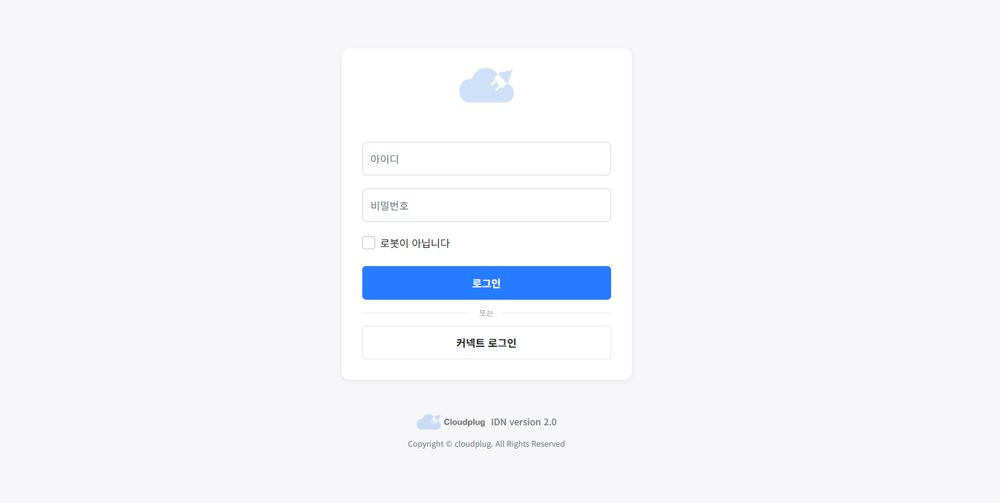 [로그인 화면] |
▶메뉴 위치: 로그인 후 2단계 인증 화면
▶기능 설명:
아이디/비밀번호 인증 이후 추가 인증이 필요한 계정에 대해 인증코드를 입력하여 사용자 본인 여부를 확인한다.
▶사용 절차:
1. 로그인 후 2단계 인증 화면으로 이동한다.
2. 인증코드 요청 버튼을 클릭하여 인증코드를 발급받는다.
3. 수신한 인증코드를 입력한다.
4. 인증 완료 시 다음 화면으로 이동한다.
▶화면 내 주요 버튼:
| 버튼명 | 설명 |
|---|---|
| 인증코드 요청 | 인증코드를 신규 발급하거나 재발급한다. |
▶처리 결과 / 유의사항:
인증 코드의 유효시간은 발급 시점 기준 3분이며 유효시간이 초과된 경우 재발급이 필요하다.
인증코드는 1회만 사용할 수 있으며, 재발급 시 기존 코드는 무효화된다
인증 실패 시 메시지가 화면에 표시되며 코드를 다시 확인하며 입력해야 한다.
인증코드를 수신하지 못한 경우, 재발급을 시도하거나 사전에 등록된 연락 수단(이메일, SMS 등)을 확인해야 한다.
지속적으로 인증에 실패하거나 접근이 제한되는 경우, 관리자에게 문의하여 계정 상태를 확인한다.
로그인 실패 시 화면에 표시되는 메시지를 확인한 후, 필요한 경우 관리자에게 문의하여 계정 상태를 확인해야 한다.
▶스크린샷:
|
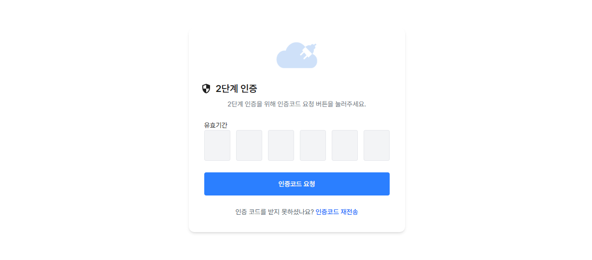 [2단계 인증 화면] |
▶메뉴 위치: 로그인 후 비밀번호 재설정 화면
▶기능 설명:
최초 로그인 또는 비밀번호 변경이 필요한 계정에 대해 새로운 비밀번호를 설정한다.
비밀번호 변경이 완료되면 보안 정책에 따라 재로그인이 요구될 수 있다.
▶사용 절차:
1. 비밀번호 재설정 화면으로 이동한다.
2. 새 비밀번호와 새 비밀번호 확인을 입력한다.
3. 확인 버튼을 클릭한다.
4. 비밀번호 변경 결과를 확인한다.
▶입력 항목:
| 항목 | 설명 | 입력 가이드 |
|---|---|---|
| 새 비밀번호 | 변경할 비밀번호 | 비밀번호 정책에 맞게 입력 |
| 새 비밀번호 확인 | 변경 비밀번호 확인 | 새 비밀번호와 동일하게 입력 |
▶화면 내 주요 버튼:
| 버튼명 | 설명 |
|---|---|
| 확인 | 입력한 비밀한 비밀번호로 변경을 수행한다. |
▶처리 결과 / 유의사항:
입력한 비밀번호는 시스템의 보안 정책(길이, 문자 조합 등)을 검증한 후 저장된다.
새 비밀번호와 확인 값이 일치하지 않을 경우 변경이 진행되지 않으며 오류 메시지가 표시된다.
보안을 위해 일정 횟수 이상 실패 시 변경이 제한될 수 있다.
비밀번호 변경이 완료되면 보안 정책에 따라 재로그인이 요구될 수 있다.
변경된 비밀번호는 이후 로그인 시 사용해야 한다.
▶스크린샷:
|
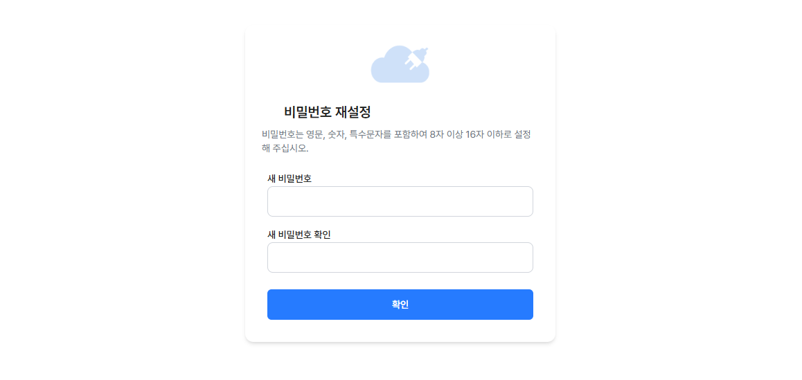 [비밀번호 재설정 화면] |
| 영역 | 설명 |
|---|---|
| 로고 | 클릭 시 대시보드 화면으로 이동한다. |
| 조직 컨텍스트 | 전체 또는 특정 조직을 선택하여 조회 및 작업 범위를 설정한다. |
| 알림 | 미확인 알람을 조회하고 확인(읽음) 처리할 수 있다. |
| 매뉴얼 | 사용자 매뉴얼로 이동하는 버튼이다. |
| 프로필 | 관리자 설정 화면으로 이동하거나 로그아웃을 수행할 수 있다. |
▶스크린샷:
|
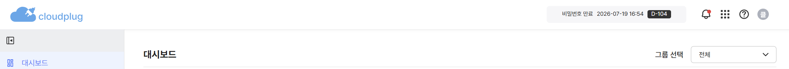 [상단바 화면] |
메뉴 구성은 사용자 권한에 따라 일부 항목이 표시되지 않을 수 있다.
| 1차 메뉴 | 2차 메뉴 |
|---|---|
| 대시보드 | 대시보드 |
| 관리 | 컨트롤러 관리, 중계서버 관리, 가상보안네트워크 관리, 사용자 관리, 조직 관리, 부서 관리, 알람 관리, 이상감지 관리, 라이선스 관리, 요청 관리 |
| 보안 및 정책 | 계정 보안, 비밀번호 보안, IP 접근 제어 |
| 시스템품질 | 시스템품질 |
| 관리자 설정 | 관리자 설정 |
| 감사 | 감사 |
▶스크린샷:
|
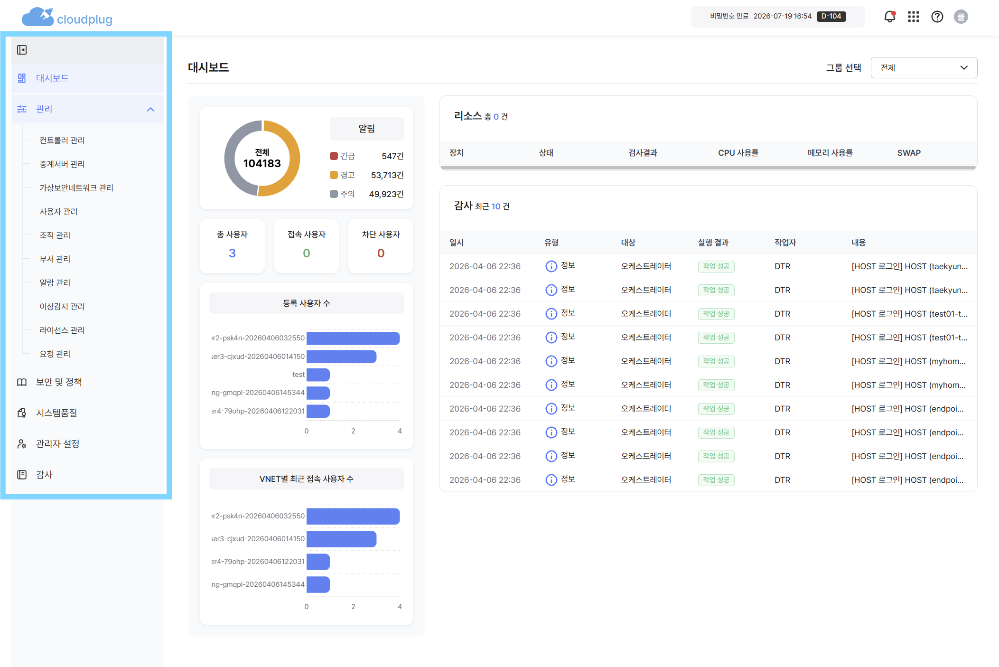 [좌측 메뉴 화면] |
상단의 조직 컨텍스트가 '전체'로 설정된 경우, 일부 메뉴에서는 생성 기능이 제한될 수 있다.
따라서 리소스 생성 또는 설정 변경 작업 전, 대상 조직이 올바르게 선택되어 있는지 반드시 확인해야 한다.
조회 시에는 검색 및 필터 기능을 우선 활용하여 원하는 데이터를 빠르게 확인한다.
▶스크린샷:
|
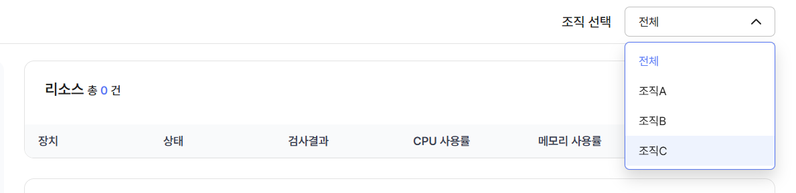 [조직 컨텍스트 화면] |
| 메뉴 | 설명 |
|---|---|
| 관리자 설정 | 관리자 이름, 이메일 수정 및 계정 설정 |
| 로그아웃 | 현재 세션 종료 후 로그인 화면 이동 |
▶스크린샷:
|
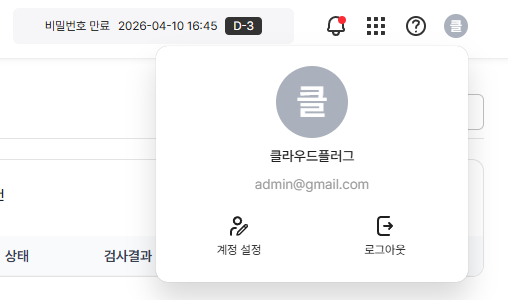 [프로필 메뉴 화면] |
▶메뉴 위치: 좌측 메뉴 > 대시보드
▶기능 설명:
선택한 조직(그룹) 범위를 기준으로 시스템 운영 현황을 요약하여 제공한다.
알람 현황, 사용자 현황, VNET 기준 통계, 최근 감사 로그 등을 한 화면에서 확인할 수 있으며, 주요 지표를 통해 현재 상태를 빠르게 파악할 수 있다.
대시보드 내 차트 및 항목을 클릭하면 관련 관리 화면으로 이동하여 상세 내용을 확인할 수 있다
▶사용 절차:
1. 좌측 메뉴에서 대시보드를 선택한다.
2. 필요 시 상단 그룹 컨텍스트를 변경하여 조회 범위를 설정한다.
3. 카드, 차트, 최근 로그 영역을 통해 주요 현황을 확인한다.
4. 추가 확인이 필요한 항목을 클릭하여 관련 상세 화면으로 이동한다.
| 구분 | 설명 |
|---|---|
| 알람 현황 | 발생한 알람의 상태 및 추이를 차트 형태로 제공하며, 클릭 시 알람 관리 화면으로 이동한다. |
| 사용자 현황 | 총 사용자 수, 접속 사용자 수, 차단 사용자 수, 등록 사용자 수 등을 표시한다. |
| VNET 통계 | 가상보안네트워크의 최근 접속 사용자 수를 표시한다. |
| 최근 감사 로그 | 최근 수행된 작업 이력을 시간순으로 확인할 수 있다. |
▶처리 결과 / 유의사항:
상단 조직 컨텍스트 변경 시, 해당 범위 기준으로 대시보드 데이터가 재조회된다.
대시보드는 실시간 알람 반영을 위해 SSE기반 구독이 동작하며, 새로운 알람이 발생할 경우 화면에 자동 반영된다.
차단 사용자 수가 급증하면 계정 보안 정책과 IP 접근 제어 정책을 함께 점검한다.
최근 감사 로그를 함께 확인하면, 특정 상태 변화에 대한 원인(선행 작업 및 변경 주체)을 빠르게 파악할 수 있다.
▶스크린샷:
|
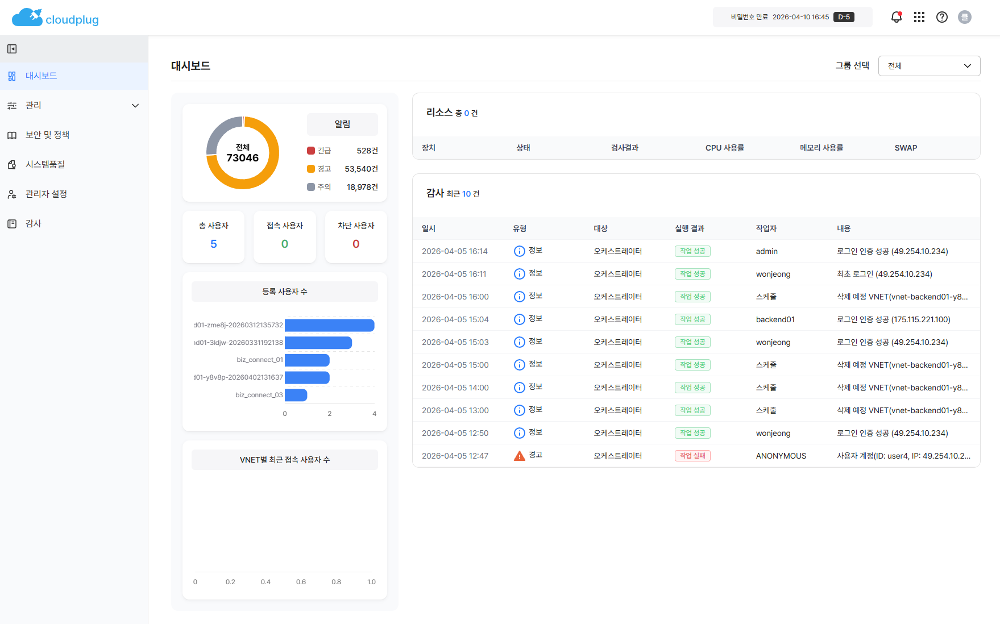 [대시보드 화면] |
컨트롤러는 가상 네트워크(VNET)를 구성하고 운영하기 위한 핵심 서버이다.
각 조직별 네트워크 환경을 구성하기 위해서는 최소 1개 이상의 컨트롤러가 반드시 등록되어 있어야 한다.
▶메뉴 위치: 좌측 메뉴 > 관리 > 컨트롤러 관리
▶기능 설명:
등록된 컨트롤러의 목록을 조회하고, 조건 검색을 통해 원하는 항목을 확인할 수 있다.
또한 컨트롤러의 신규 등록, 정보 수정, 삭제 기능을 제공한다.
▶사용 절차:
1. 좌측 메뉴에서 컨트롤러 관리 메뉴로 이동한다.
2. 검색 조건을 입력하여 컨트롤러 목록을 조회한다.
3. 컨트롤러 등록 버튼을 클릭하여 신규 컨트롤러를 등록한다.
4. 목록에서 대상 컨트롤러를 선택하여 수정 또는 삭제를 수행한다.
5. 작업 결과(저장 또는 삭제)가 정상적으로 반영되었는지 확인한다.
▶입력 항목:
| 항목 | 설명 | 입력 가이드 |
|---|---|---|
| 검색 대상 | 검색 기준 | 컨트롤러 이름 기준으로 선택 |
| 검색어 | 조회 키워드 | 이름의 일부만 입력해도 검색 가능 |
▶화면 내 주요 버튼:
| 버튼명 | 설명 |
|---|---|
| 컨트롤러 등록 | 신규 컨트롤러 정보를 등록한다. |
| 수정 | 선택한 컨트롤러 정보를 수정한다. |
| 삭제 | 선택한 컨트롤러를 삭제한다. |
▶처리 결과 / 유의사항:
상단 그룹 컨텍스트가 전체로 설정된 경우, 컨트롤러 등록 기능이 제한되며 반드시 특정 조직을 선택해야 등록할 수 있다.
조직을 선택한 상태에서 조회 시, 해당 조직 기준으로 컨트롤러 목록이 표시된다.
컨트롤러의 상태 정보는 다음과 같이 구분하여 확인해야 한다.
운영 상태: 실제 서버 연결 및 동작 여부
등록 상태: 시스템에 등록된 정보 상태
수정 시 입력하는 다음 정보는 VNET 및 엔드포인트 통신에 직접적인 영향을 미치므로 정확하게 입력해야 한다.
외부 IP/Port
내부 IP/Port
▶스크린샷:
|
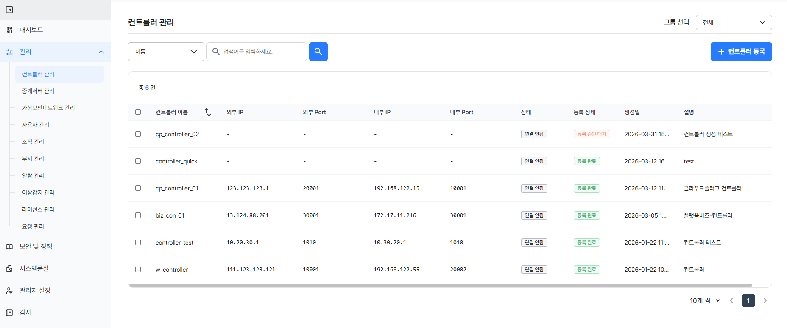 [컨트롤러 관리 화면] |
▶기능 설명:
선택한 그룹 범위와 검색 조건을 기준으로 등록된 컨트롤러 목록을 조회한다.
검색 조건을 활용하여 특정 컨트롤러를 빠르게 확인할 수 있다.
▶사용 절차:
1. 컨트롤러 관리 화면으로 이동한다.
2. 상단 그룹 컨텍스트에서 조회할 조직(그룹)을 선택한다.
3. 검색 대상과 검색어를 입력한다.
4. 조회 버튼을 클릭하거나 검색을 실행하여 목록을 확인한다.
▶주요 항목:
| 항목 | 설명 | 표시 정보 |
|---|---|---|
| 컨트롤러 이름 | 시스템 식별용 고유 이름 | 정렬 아이콘(↑↓)으로 가나다순 정렬 가능 |
| 네트워크 | 외부/내부 접속 주소 및 포트 | 외부망과 내부망 연결 정보 표시 |
| 상태 | 서버 연결 여부 | 연결됨(초록)/연결 안 됨(회색)으로 실시간 표시 |
| 설명 | 관리자 메모 | 컨트롤러 등록 시 입력한 참고 사항 |
| 생성일 | 최초 등록 날짜 | YYYY-MM-DD 형식으로 표시 |
▶처리 결과 / 유의사항:
그룹 컨텍스트에 따라 조회 범위가 달라지며, 선택한 그룹 기준으로 목록이 표시된다.
검색어는 부분 일치로 조회되므로, 컨트롤러 이름의 일부만 입력해도 검색이 가능하다.
검색 조건을 입력하지 않은 경우, 선택한 그룹에 해당하는 전체 컨트롤러 목록이 조회된다.
조회 결과가 없는 경우, 검색 조건 또는 그룹 선택이 올바른지 확인해야 한다.
▶기능 설명:
신규 컨트롤러 정보를 입력하여 시스템에 등록한다.
등록된 컨트롤러는 VNET 구성 및 네트워크 운영에 사용된다.
▶사용 절차:
1. 컨트롤러 등록 버튼을 클릭한다.
2. 컨트롤러 정보를 입력한다.
3. 저장 버튼을 클릭하여 등록을 완료한다.
4. 등록 완료 후 목록에 신규 컨트롤러가 정상적으로 반영되었는지 확인한다.
▶입력 항목:
| 항목 | 설명 | 입력 가이드 |
|---|---|---|
| 컨트롤러 이름 | 시스템 식별용 고유 이름 | - 영문, 숫자, 일부 특수문자(-)만 사용 가능 - 중복 불가 및 생성 후 수정 불가 |
| 설명 | 관리용 메모 | 선택 입력 |
▶처리 결과 / 유의사항:
컨트롤러 이름은 시스템 내에서 고유하게 식별되는 값으로, 중복된 이름으로는 등록할 수 없다.
컨트롤러 이름은 생성 이후 변경이 불가능하므로, 명확한 규칙에 따라 신중하게 입력해야 한다.
필수 항목이 입력되지 않았거나 입력 형식이 올바르지 않은 경우 저장이 제한되며, 오류 메시지가 표시된다.
컨트롤러 등록은 선택한 조직 기준으로 수행되므로, 작업 전 상단 조직 컨텍스트를 반드시 확인해야 한다.
등록 완료 후, 컨트롤러 상태(정상/비정상)를 함께 확인하여 정상적으로 연결되었는지 점검해야 한다.
▶스크린샷:
|
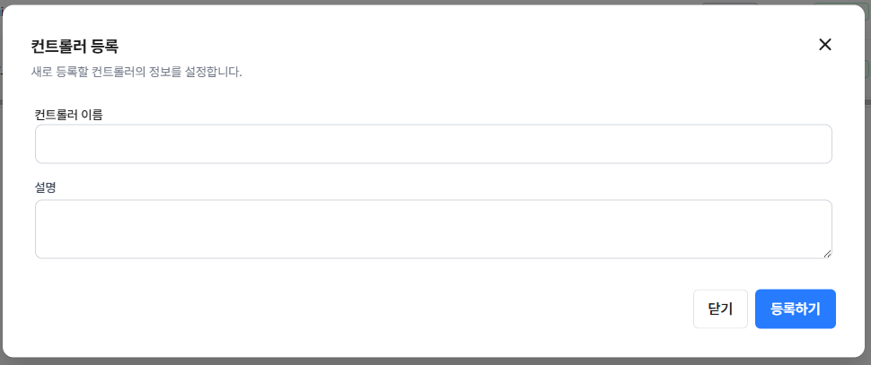 [컨트롤러 등록 화면] |
▶기능 설명:
등록된 컨트롤러의 설정 정보를 변경한다.
네트워크 관련 정보(외부/내부 IP, 포트 등)는 VNET 및 엔드포인트 통신에 직접적인 영향을 미치므로 신중하게 수정해야 한다.
▶사용 절차:
1. 컨트롤러 관리 화면에서 수정할 컨트롤러를 선택한다.
2. 수정 버튼을 클릭한다.
3. 변경할 항목을 수정한다.
4. 저장 버튼을 클릭하여 변경 사항을 반영한다.
5. 수정 결과가 정상적으로 적용되었는지 확인한다.
▶입력 항목:
| 항목 | 설명 | 입력 가이드 |
|---|---|---|
| 컨트롤러 이름 | 시스템 식별용 고유 이름 | 수정 불가 |
| 설명 | 관리용 메모 | 선택 입력 |
| 외부IP | 외부망 통신용 공인 IP 주소 |
- IPv4 형식(예: 192.168.0.1)으로 입력 - 각 자릿수는 0~255 범위 내 숫자만 가능 - 아래 IP 주소 사용 불가 (127.0.0.1/0.0.0.0/255.255.255.255) |
| 외부 포트 | 외부 통신용 통로 번호 | 1 ~ 65535 범위 내 숫자만 입력 가능 |
| 내부 IP | 내부망 통신용 사설 IP 주소 |
- IPv4 형식(예: 192.168.0.1)으로 입력 - 각 자릿수는 0~255 범위 내 숫자만 가능 - 아래 IP 주소 사용 불가 (127.0.0.1/0.0.0.0/255.255.255.255) |
| 내부 포트 | 내부 통신용 통로 번호 | 1 ~ 65535 범위 내 숫자만 입력 가능 |
| 네트워크 인터페이스 | 장치 연결 통로 명칭 | 수정 불가 |
| UUId | 기기 고유 식별 번호 | 수정 불가 |
| MAC 주소 | 기기 물리 식별 번호 | 수정 불가 |
▶처리 결과 / 유의사항:
컨트롤러 이름은 시스템 내에서 고유하게 식별되는 값으로, 중복된 이름으로는 등록할 수 없다.
컨트롤러 이름, 네트워크 인터페이스, UUID, MAC 주소는 시스템 식별 정보로 수정할 수 없다.
IP 주소 및 포트는 입력 형식 검증을 통과해야 하며, 유효하지 않은 값 입력 시 저장이 제한된다.
운영 중인 컨트롤러의 설정을 변경할 경우, 기존 연결 세션에 영향을 줄 수 있으므로 작업 시간 및 영향 범위를 고려하여 수행해야 한다.
▶스크린샷:
|
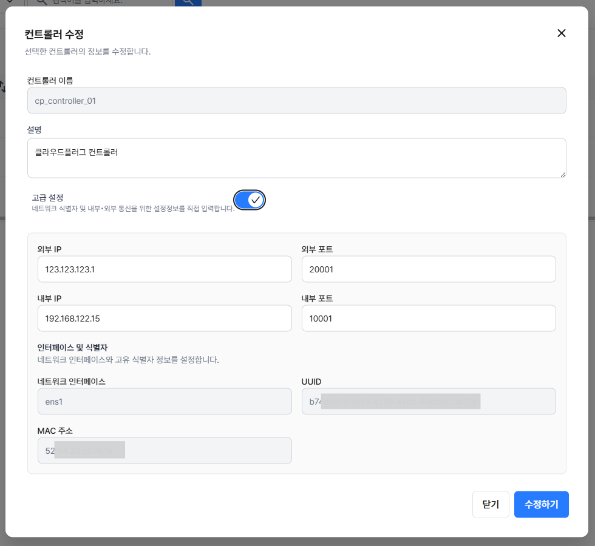 [컨트롤러 수정 화면] |
▶기능 설명:
선택한 컨트롤러를 시스템에서 삭제한다.
삭제된 컨트롤러는 더 이상 VNET 구성 및 네트워크 운영에 사용할 수 없다.
▶사용 절차:
1. 컨트롤러 관리 화면에서 삭제할 컨트롤러를 선택한다.
2. 삭제 버튼을 클릭한다.
3. 확인 창에서 삭제 여부를 확인한 후 삭제를 확정한다.
4. 삭제 완료 후 목록에서 해당 컨트롤러가 제거되었는지 확인한다.
▶처리 결과 / 유의사항:
삭제된 컨트롤러는 복구할 수 없으므로, 삭제 전 반드시 대상이 올바른지 확인해야 한다.
해당 컨트롤러가 VNET 또는 다른 리소스에 사용 중인 경우, 삭제가 제한되거나 서비스 영향이 발생할 수 있다.
운영 중인 컨트롤러를 삭제할 경우, 해당 컨트롤러를 통해 연결된 네트워크 통신이 중단될 수 있다.
삭제 시 확인 창을 통해 최종 검증 절차가 수행되며, 사용자의 명시적 확인 이후 삭제가 진행된다.
삭제 완료 후, 관련 서비스 상태 및 연결 상태를 함께 점검해야 한다.
▶스크린샷:
|
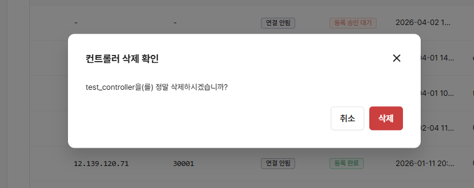 [컨트롤러 삭제 화면] |
리눅스 환경에 배포할 컨트롤러 실행 패키지를 생성하고, 대상 호스트에 설치하여 서비스 형태로 실행한다.
설치 완료 후 컨트롤러는 IDN과 연동되어 네트워크 제어 기능을 수행한다.
1. Linux 빌드 장비에서 소스 디렉토리로 이동한다.
cd /path/to/IDNclient_wg
2. 패키지를 생성한다.
컨트롤러 단독 패키지의 경우:
./scripts/package-controller.sh
컨트롤러 + 중계서버 통합 패키지의 경우:
./scripts/package-linux-appliances.sh all
3. 생성된 패키지 파일을 확인한다.
dist/idn-controller-
4. 생성된 패키지를 대상 호스트로 복사한다.
5. 대상 호스트에서 작업 디렉토리를 생성하고 압축을 해제한다.
mkdir -p /tmp/idn-controller-package
tar xzf idn-controller-
6. 설치 스크립트를 실행한다.
cd /tmp/idn-controller-package
sudo ./install.sh --auth-ip
7. 실행 예시
sudo ./install.sh --auth-ip 61.109.220.75 --auth-port 15004
▶대상 호스트 요구 사항:
| 항목 | 설명 |
|---|---|
| init 시스템 | `systemd` 사용 환경 |
| 쉘 | `bash` 사용 환경 |
| 권한 | `sudo` 사용 가능 환경 |
| 패키지 관리자 | apt-get 기준 자동 의존성 설치 지원 (미사용 환경은 수동 설치 필요) |
▶컨트롤러 런타임 의존성:
| 구분 | 패키지 |
|---|---|
| 라이브러리 | `libevent`, `libssl`, `jansson`, `glib2`, `libblkid` |
대상 환경에 따라 사전 설치가 필요할 수 있다.
▶설치 결과 경로:
| 항목 | 경로 |
|---|---|
| 실행 바이너리 | `/opt/idn/controller/bin/idn-controllerd` |
| 래퍼 명령 | `/usr/local/bin/idn-controller` |
| 서비스 파일 | `/etc/systemd/system/idn-controller.service` |
| 인증 서버 설정 | `/etc/default/idn-controller.auth` |
| ID 환경 파일 | `/etc/default/idn-controller` |
▶인증 서버 설정 형식:
컨트롤러는 /etc/default/idn-controller.auth 파일을 통해 인증 서버 정보를 읽는다.
기본 형식
예시
61.109.220.75 15004
61.109.220.75 15004 enp1s0
netif(네트워크 인터페이스)를 생략할 경우, 기본 라우트 인터페이스를 자동으로 감지한다.
설정 파일의 첫 번째 유효 행은 반드시 인증 서버 정보여야 하며, 빈 줄이나 주석은 무시된다.
파일이 비어 있거나 주석만 존재하는 경우, 컨트롤러 서비스는 시작되지 않는다.
▶처리 결과 / 유의사항:
설치 완료 후 systemctl을 통해 서비스 상태를 반드시 확인해야 한다.
systemctl status idn-controller
서비스가 정상적으로 실행되지 않는 경우 다음 항목을 점검한다.
인증 서버 IP 및 포트 설정값
네트워크 인터페이스 설정
런타임 의존성 라이브러리 설치 여부
방화벽 또는 네트워크 정책에 의해 Orchestrator와 통신이 차단될 수 있으므로, 관련 포트가 허용되어 있는지 확인해야 한다.
설치 경로 및 설정 파일을 임의로 변경할 경우 서비스 실행에 문제가 발생할 수 있으므로 권장 경로를 유지해야 한다.
▶기능 설명:
설치된 컨트롤러 서비스를 실행하고, 상태 확인, 로그 조회, 업데이트 및 제거 작업을 수행한다.
운영 중에는 서비스 상태와 로그를 통해 정상 동작 여부를 지속적으로 점검해야 한다.
▶사용 절차:
1. 컨트롤러 ID를 등록하고 서비스를 시작한다.
sudo idn-controller
2. 서비스 상태 및 제어 명령을 사용하여 운영 상태를 관리한다.
상태 확인:
idn-controller status
서비스 중지:
sudo idn-controller stop
서비스 재시작:
sudo idn-controller restart
로그 확인:
idn-controller logs
컨트롤러를 업데이트하는 경우:
(패키지를 /tmp/idn-controller-package에 해제 후)
sudo ./install.sh --skip-deps
sudo idn-controller restart
컨트롤러를 제거한다.
컨트롤러를 제거하는 경우
sudo ./uninstall.sh
설정 파일까지 함께 삭제할 경우
sudo KEEP_CONFIG=0 ./uninstall.sh
▶점검 및 장애 대응:
인증 파일 설정 오류 발생 시
cat /etc/default/idn-controller.auth
첫 번째 유효 행이 <orchestrator-ip> <auth-port> 형식인지 확인한다.
(예: 61.109.220.75 15004)
서비스 시작 실패 시
systemctl status idn-controller.service
journalctl -u idn-controller.service -n 200 --no-pager
명령을 통해 서비스 상태 및 로그를 확인한다.
인증 서버 주소 변경 시
sudo vi /etc/default/idn-controller.auth
sudo idn-controller restart
설정 파일 수정 후 서비스를 재시작한다.
▶처리 결과 / 유의사항:
컨트롤러 실행 후, 오케스트레이터에 정상 등록 및 승인 상태인지 반드시 확인해야 한다.
로그 확인은 장애 원인 분석의 기본 절차이며, 문제 발생 시 우선적으로 수행해야 한다.
업데이트 시 --skip-deps 옵션은 기존 의존성이 정상 설치되어 있는 경우에만 사용해야 한다.
제거 시 기본적으로 설정 파일은 유지되며, 완전 삭제가 필요한 경우에만 KEEP_CONFIG=0 옵션을 사용한다.
운영 중 서비스 재시작은 연결 세션에 영향을 줄 수 있으므로, 작업 시간 및 영향 범위를 고려하여 수행해야 한다.
▶권장 운영 흐름:
다음 순서로 작업을 수행하는 것을 권장한다.
1. 패키지 빌드
2. tarball 파일 대상 서버로 복사
3. install.sh 실행
4. sudo idn-controller <controller_id> 실행
5. 오케스트레이터 등록 및 승인 상태 확인
6. 서비스 상태 및 로그 점검
중계서버는 가상 네트워크(VNET)에 연결된 단말 간 통신을 지원하는 릴레이(중계) 전용 서버이다.
직접 연결이 어려운 네트워크 환경에서 데이터 전달 경로를 제공하여 통신 안정성을 확보한다.
▶메뉴 위치: 좌측 메뉴 > 관리 > 중계서버 관리
▶기능 설명:
등록된 중계서버 목록을 조회하고, 조건 검색을 통해 원하는 서버를 확인할 수 있다.
중계서버의 신규 등록, 정보 수정, 삭제 기능을 제공한다.
각 중계서버에 대해 운영 상태, 등록 상태, 외부/내부 IP 및 포트 정보를 확인할 수 있으며, 이를 통해 통신 경로 및 연결 상태를 점검할 수 있다.
▶사용 절차:
1. 좌측 메뉴에서 중계서버 관리 메뉴로 이동한다.
2. 검색 조건을 입력하여 중계서버 목록을 조회한다.
3. 중계서버 등록 버튼을 클릭한다.
4. 필요한 정보를 입력한 후 저장한다.
5. 목록에서 대상 중계서버를 선택하여 수정 또는 삭제를 수행한다.
6. 작업 결과가 정상적으로 반영되었는지 확인한다.
▶입력 항목:
| 항목 | 설명 | 입력 가이드 |
|---|---|---|
| 검색 대상 | 검색 기준 | 중계서버 이름 기준으로 선택 |
| 검색어 | 조회 키워드 | 이름의 일부만 입력해도 검색 가능 |
▶화면 내 주요 버튼:
| 버튼명 | 설명 |
|---|---|
| 중계서버 등록 | 신규 중계서버를 등록한다. |
| 수정 | 선택한 중계서버 정보를 수정한다. |
| 삭제 | 선택한 중계서버를 삭제한다. |
▶처리 결과 / 유의사항:
상단 조직 컨텍스트에 따라 조회 범위가 결정되며, 선택한 그룹 기준으로 목록이 표시된다.
중계서버는 단말 간 통신 경로에 직접적으로 관여하므로, 설정 변경 시 통신 품질 및 연결 상태에 영향을 줄 수 있다.
외부 IP/포트 및 내부 IP/포트 설정이 올바르지 않은 경우, 릴레이 통신이 정상적으로 동작하지 않을 수 있다.
중계서버 삭제 시 해당 서버를 사용하는 VNET 또는 단말 연결에 영향이 발생할 수 있으므로, 사전에 연관 관계를 반드시 확인해야 한다.
등록 및 수정 후에는 반드시 서버 상태(정상/비정상)를 확인하여 정상 동작 여부를 점검해야 한다.
▶스크린샷:

[중계서버 관리 화면] |
▶기능 설명:
검색 조건과 조직 범위를 기준으로 등록된 중계서버 목록을 조회한다.
조회 결과를 통해 각 중계서버의 연결 상태, 네트워크 정보, 등록 상태 등을 확인할 수 있다.
▶사용 절차:
1. 중계서버 관리 화면으로 이동한다.
2. 상단 그룹 컨텍스트에서 조회할 조직을 선택한다.
3. 검색 대상과 검색어를 입력한다.
4. 조회를 실행하여 목록을 확인한다.
5. 각 항목의 상태, IP 및 포트 정보를 확인한다.
▶주요 항목:
| 항목 | 설명 | 표시 정보 |
|---|---|---|
| 중계서버 이름 | 시스템 식별용 고유 이름 |
- 영문, 숫자, 일부 특수문자(-)만 사용 가능 - 중복 불가 및 생성 후 수정 불가 |
| 네트워크 | 중계서버 접속 주소 및 포트 | 서버에 설정된 외부/내부 IP 및 포트 정보 표시 |
| 상태 | 서버 연결 여부 | 연결됨(초록)/연결 안 됨(회색)으로 실시간 표시 |
| 등록 상태 | 최고 관리자 승인 대기 상태 | 등록 승인 대기/등록 완료 표시 |
| 생성일 | 최초 등록 날짜 | YYYY-MM-DD 형식으로 표시 |
| 설명 | 관리자 메모 | 등록 시 입력한 용도 및 특이사항 |
▶처리 결과 / 유의사항:
조직 컨텍스트에 따라 조회 범위가 달라지며, 선택한 조직 기준으로 목록이 표시된다.
검색어는 부분 일치로 조회되므로, 중계서버 이름의 일부만 입력해도 검색이 가능하다.
검색 조건 없이 조회할 경우, 선택한 그룹의 전체 중계서버 목록이 표시된다.
상태가 “연결 안 됨”으로 표시되는 경우, 다음 항목을 점검해야 한다.
서버 실행 상태
네트워크 연결 상태
IP 및 포트 설정 값
등록 상태가 “승인 대기”인 경우, 최고 관리자 승인 이후 정상 사용이 가능하다.
▶기능 설명:
신규 중계서버를 시스템에 등록한다. 등록된 중계서버는 VNET 환경에서 단말 간 통신을 위한 릴레이 경로로 사용된다.
▶사용 절차:
1. 중계서버 등록 버튼을 클릭한다.
2. 중계서버 정보를 입력한다.
3. 저장 버튼을 클릭하여 등록을 완료한다.
4. 등록 완료 후 목록에 정상적으로 반영되었는지 확인한다.
▶입력 항목:
| 항목 | 설명 | 입력 가이드 |
|---|---|---|
| 중계서버 이름 | 시스템 식별용 고유 이름 |
- 영문, 숫자, 하이픈(-)만 사용 가능 - 중복 불가 - 생성 후 수정 불가 |
| 설명 | 관리용 메모 | 선택 입력 |
▶처리 결과 / 유의사항:
중계서버 이름은 시스템 내에서 고유하게 식별되는 값으로, 중복된 이름으로는 등록할 수 없다.
중계서버 이름은 생성 이후 변경이 불가능하므로, 명확한 기준에 따라 신중하게 입력해야 한다.
필수 항목이 입력되지 않거나 입력 형식이 올바르지 않은 경우 저장이 제한된다.
중계서버 등록은 선택한 조직 기준으로 수행되므로, 작업 전 상단 조직 컨텍스트를 반드시 확인해야 한다.
등록 후 서버 상태가 정상(연결됨)으로 표시되는지 확인하여 실제 통신 가능 여부를 점검해야 한다.
▶스크린샷:
|
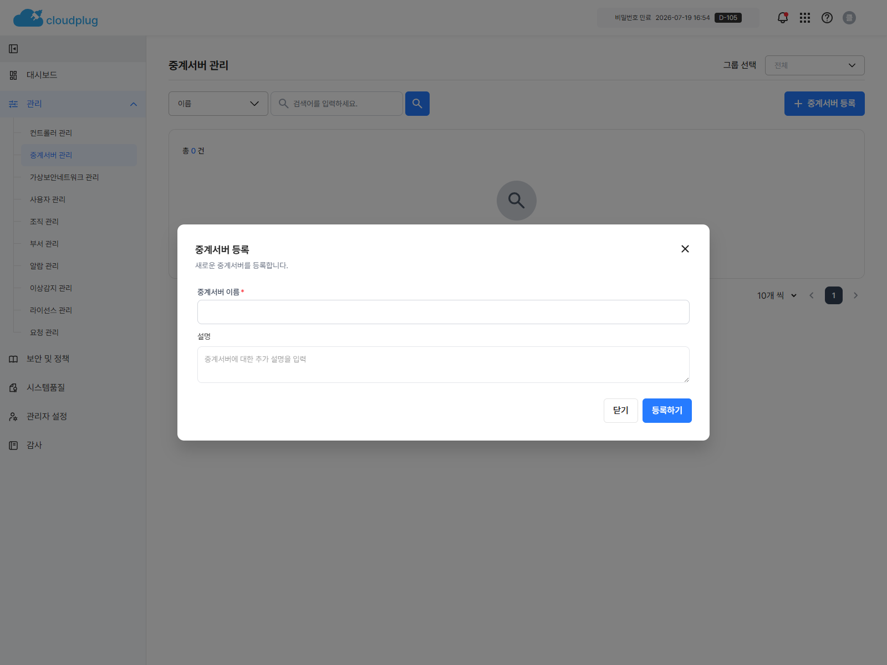 [중계서버 등록 화면] |
▶기능 설명:
등록된 중계서버의 설정 정보를 변경한다.
네트워크 관련 정보(외부/내부 IP, 포트 등)는 단말 간 통신 경로에 직접적인 영향을 미치므로 신중하게 수정해야 한다.
▶사용 절차:
1. 중계서버 관리 화면에서 수정할 중계서버를 선택한다.
2. 수정 버튼을 클릭한다.
3. 변경할 항목을 수정한다.
4. 저장 버튼을 클릭하여 변경 사항을 반영한다.
5. 수정 결과가 정상적으로 적용되었는지 확인한다.
▶입력 항목:
| 항목 | 설명 | 입력 가이드 |
|---|---|---|
| 중계서버 이름 | 시스템 식별용 고유 이름 | 수정 불가 |
| 설명 | 관리용 메모 | 선택 입력 |
| 외부IP | 외부망 통신용 공인 IP 주소 |
- IPv4 형식(예: 192.168.0.1)으로 입력 - 각 자릿수는 0~255 범위 내 숫자만 가능 - 아래 IP 주소 사용 불가 (127.0.0.1/0.0.0.0/255.255.255.255) |
| 외부 포트 | 외부 통신용 통로 번호 | 1 ~ 65535 범위 내 숫자만 입력 가능 |
| 내부 IP | 내부망 통신용 사설 IP 주소 |
- IPv4 형식(예: 192.168.0.1)으로 입력 - 각 자릿수는 0~255 범위 내 숫자만 가능 - 아래 IP 주소 사용 불가 (127.0.0.1/0.0.0.0/255.255.255.255) |
| 내부 포트 | 내부 통신용 통로 번호 | 1 ~ 65535 범위 내 숫자만 입력 가능 |
| 네트워크 인터페이스 | 장치 연결 통로 명칭 | 수정 불가 |
| UUId | 기기 고유 식별 번호 | 수정 불가 |
| MAC 주소 | 기기 물리 식별 번호 | 수정 불가 |
▶처리 결과 / 유의사항:
중계서버 이름, 네트워크 인터페이스, UUID, MAC 주소는 시스템 식별 정보로 수정할 수 없다.
외부 IP/포트 및 내부 IP/포트는 통신 경로에 직접적인 영향을 주는 핵심 설정 값이다.
IP 주소 및 포트는 형식 검증을 통과해야 하며, 유효하지 않은 값 입력 시 저장이 제한된다.
변경 사항 저장 후, 중계서버 상태가 정상(연결됨)으로 표시되는지 반드시 확인해야 한다.
운영 중인 중계서버 설정 변경 시 기존 연결 세션에 영향을 줄 수 있으므로, 작업 시간 및 영향 범위를 고려하여 수행해야 한다.
▶스크린샷:
|
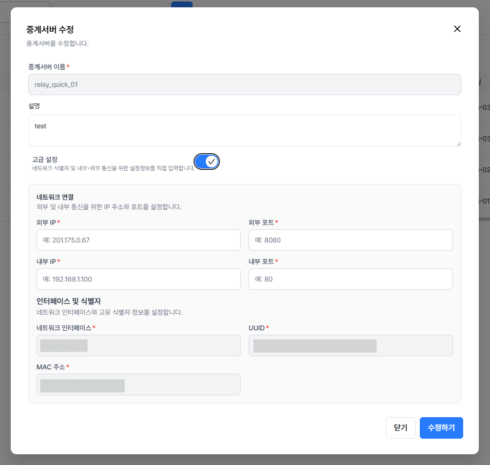 [중계서버 수정 화면] |
▶기능 설명:
선택한 중계서버를 시스템에서 삭제한다.
삭제된 중계서버는 더 이상 VNET 환경에서 통신 중계 역할을 수행할 수 없다.
▶사용 절차:
1. 중계서버 관리 화면에서 삭제할 중계서버를 선택한다.
2. 삭제 버튼을 클릭한다.
3. 확인 창에서 삭제 여부를 확인한 후 삭제를 확정한다.
4. 삭제 완료 후 목록에서 해당 중계서버가 제거되었는지 확인한다.
▶처리 결과 / 유의사항
삭제된 중계서버는 복구할 수 없으므로, 삭제 전 대상이 정확한지 반드시 확인해야 한다.
해당 중계서버가 VNET 또는 단말 연결에 사용 중인 경우, 삭제가 제한되거나 통신 장애가 발생할 수 있다.
운영 중인 중계서버를 삭제할 경우, 해당 서버를 통해 연결된 통신이 즉시 중단될 수 있다.
삭제 완료 후, 관련 서비스 상태 및 연결 상태를 함께 점검해야 한다.
▶스크린샷:
|
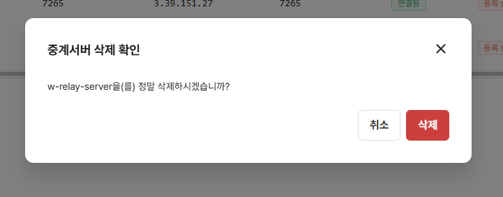 [중계서버 삭제 화면] |
리눅스 환경에 배포할 중계서버 실행 패키지를 생성하고, 대상 호스트에 설치하여 서비스 형태로 실행한다.
설치 완료 후 중계서버는 IDN과 연동되어 단말 간 통신 중계 기능을 수행한다.
1. Linux 빌드 장비에서 소스 디렉토리로 이동한다.
cd /path/to/IDNclient_wg
2. 패키지를 생성한다.
중계서버 단독 패키지의 경우:
./scripts/package-relay.sh
컨트롤러 + 중계서버 통합 패키지의 경우:
./scripts/package-linux-appliances.sh all
3. 생성된 패키지 파일을 확인한다.
dist/idn-relay-<YYYYMMDD>.tar.gz
4. 생성된 패키지를 대상 호스트로 복사한다.
5. 대상 호스트에서 작업 디렉토리를 생성하고 압축을 해제한다.
mkdir -p /tmp/idn-relay-package
tar xzf idn-relay-<YYYYMMDD>.tar.gz -C /tmp/idn-relay-package
6. 설치 스크립트를 실행한다.
cd /tmp/idn-relay-package
sudo ./install.sh --auth-ip <orchestrator-ip> --auth-port <auth-port>
7. 실행 예시
sudo ./install.sh --auth-ip 61.109.220.75 --auth-port 15004
▶대상 호스트 요구 사항:
| 항목 | 설명 |
|---|---|
| init 시스템 | `systemd` 사용 환경 |
| 쉘 | `bash` 사용 환경 |
| 권한 | `sudo` 사용 가능 환경 |
| 패키지 관리자 | apt-get 기준 자동 의존성 설치 지원 (미사용 환경은 수동 설치 필요) |
▶중계서버 런타임 의존성:
| 구분 | 패키지 |
|---|---|
| 라이브러리 | `libevent`, `libgtop`, `libssl`, `jansson`, `glib2`, `libblkid`, `wireguard-tools`, `iproute2` |
대상 환경에 따라 사전 설치가 필요할 수 있다.
▶설치 결과 경로:
| 항목 | 경로 |
|---|---|
| 실행 바이너리 | `/opt/idn/relay/bin/idn-edged` |
| 래퍼 명령 | `/usr/local/bin/idn-relay` |
| 서비스 파일 | `/etc/systemd/system/idn-relay.service` |
| 인증 서버 설정 | `/etc/default/idn-edge.auth` |
| ID 환경 파일 | `/etc/default/idn-relay` |
▶중계서버 런타임 디렉터리:
설치 시 다음 경로가 생성된다.
`/var/opt/n2os/backup`, `/var/opt/n2os/memory`, `/var/opt/n2os/pid`, `/var/opt/n2os/sock`, `/var/opt/n2os/log/var/log/idn.log`
▶인증 서버 설정 형식:
중계서버는 `/etc/default/idn-edge.auth` 파일을 통해 인증 서버 정보를 읽는다.
기본 형식
<orchestrator-ip> <auth-port> [netif]
예시
61.109.220.75 15004
61.109.220.75 15004 enp1s0
netif를 생략하면 기본 라우트 인터페이스를 자동 감지한다.
첫 번째 유효 행은 반드시 인증 서버 정보여야 한다.
파일이 비어 있거나 주석만 존재하는 경우 서비스가 시작되지 않는다.
▶처리 결과 / 유의사항:
설치 완료 후 반드시 서비스 상태를 확인해야 한다.
systemctl status idn-relay
서비스가 정상 동작하지 않을 경우 인증 서버 설정, 네트워크 인터페이스, 의존성 설치 여부를 점검한다.
방화벽 및 네트워크 정책에 의해 통신이 차단되지 않았는지 확인해야 한다.
▶기능 설명:
설치된 중계서버 서비스를 실행하고 상태 확인, 로그 조회, 업데이트 및 제거 작업을 수행한다.
▶사용 절차:
1. 중계서버 ID 등록 및 서비스 시작
sudo idn-relay <relay_id>
2. 서비스 상태 및 제어
상태 확인:
idn-relay status
중지:
sudo idn-relay stop
재시작:
sudo idn-relay restart
로그 확인:
idn-relay logs
업데이트:
sudo ./install.sh --skip-deps
sudo idn-relay restart
제거:
sudo ./uninstall.sh
설정 포함 제거
sudo KEEP_CONFIG=0 ./uninstall.sh
▶점검 및 장애 대응:
인증 파일 확인
cat /etc/default/idn-edge.auth
서비스 상태 확인
systemctl status idn-relay.service
journalctl -u idn-relay.service -n 200 --no-pager
네트워크 인터페이스 및 포트 확인
ip link show idn-tni
ss -lunp | egrep '30001|51820'
인증 서버 변경
sudo vi /etc/default/idn-edge.auth
sudo idn-relay restart
▶처리 결과 / 유의사항:
중계서버 실행 후 오케스트레이터 등록 및 승인 상태를 반드시 확인해야 한다.
로그 확인은 장애 분석의 기본 절차이다.
운영 중 재시작은 연결 세션에 영향을 줄 수 있다.
▶권장 운영 흐름:
1. 패키지 빌드
2. tarball 복사
3. install.sh 실행
4. sudo idn-relay <relay_id> 실행
5. 오케스트레이터 등록 및 승인 확인
6. 상태 및 로그 점검
▶메뉴 위치: 좌측 메뉴 > 관리 > 가상보안네트워크 관리
▶기능 설명:
가상보안네트워크(VNET)와 관련된 자원을 통합 관리하는 기능을 제공한다.
VNET, 엔드포인트, 토폴로지, 네트워크 맵, 네트워크 마법사 화면으로 이동하여 네트워크 구성, 연결 상태, 구조를 확인하고 관리할 수 있다.
각 화면은 네트워크 구성 요소별 관리 목적에 따라 구분되어 있으며, 이를 통해 전체 네트워크를 단계적으로 구성하고 운영할 수 있다.
▶사용 절차:
1. 좌측 메뉴에서 가상보안네트워크 관리 메뉴로 이동한다.
2. 상단 탭 또는 화면 내 이동 버튼을 통해 원하는 세부 화면을 선택한다.
3. 대상 VNET 또는 엔드포인트를 조회한다.
4. 생성, 수정, 삭제, 상태 변경 등 필요한 작업을 수행한다.
5. 작업 결과가 정상적으로 반영되었는지 확인한다.
▶화면 구성:
| 구분 | 설명 |
|---|---|
| VNET | 가상보안네트워크 생성 및 기본 정보 관리 |
| 엔드포인트 | 네트워크에 연결되는 단말 및 장치 관리 |
| 토폴로지 | 네트워크 구성 구조 및 연결 관계 시각화 |
▶스크린샷:
|
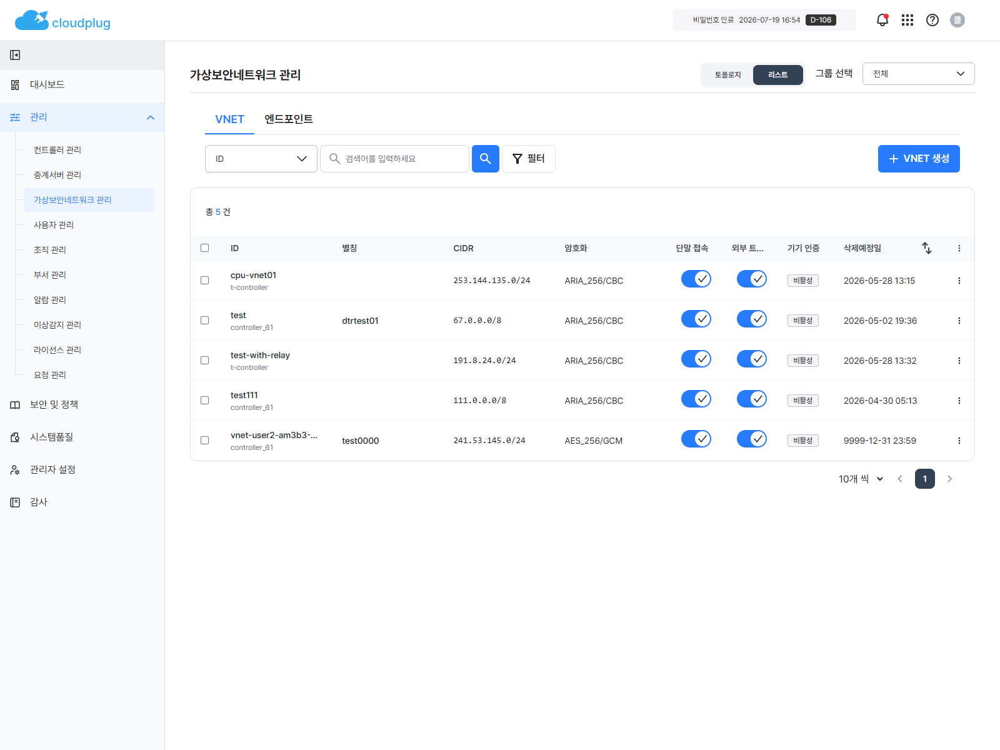 [가상보안네트워크 관리 메인 화면] |
▶기능 설명:
설정한 검색 조건과 필터를 기준으로 VNET 목록을 조회한다.
조회 결과를 통해 각 VNET의 상태, 네트워크 설정, 보안 정책 등을 확인할 수 있다.
▶사용 절차:
1. VNET 목록 화면으로 이동한다.
2. 상단 조직 컨텍스트를 확인하고, 필요한 경우 조회 범위를 설정한다.
3. 검색 조건과 필터를 설정한다.
4. 조회를 실행하여 VNET 목록을 확인한다.
5. 각 항목의 상태 및 속성 정보를 확인한다.
▶주요 항목:
| 항목 | 설명 | 표시 정보 |
|---|---|---|
| VNET 이름 | 가상네트워크 이름 및 담당 컨트롤러 | 네트워크 명칭과 이를 관리하는 컨트롤러 이름 표시 |
| 별칭 | 가상네트워크 별칭 | 사용자 식별을 위한 보조 이름 |
| CIDR | 할당된 가상 네트워크 주소 대역 | 네트워크에서 사용하는 IP 범위 |
| 암호화 | 데이터 보호를 위한 암호화 설정 |
- 알고리즘: ARIA/AES/LEA 등 - 모드: CBC/GCM 등 |
| 단말 접속 | 장치의 네트워크 접속 허용 여부 | 토글 스위치로 활성/비활성 상태 표시 |
| 외부 트래픽 | 외부 네트워크 통신 허용 여부 | 토글 스위치로 활성/비활성 상태 표시 |
| 기기 인증 | 접속 기기에 대한 추가 인증 설정 | 활성/비활성 상태 표시 |
| 삭제예정일 | 네트워크 자동 삭제 예약 일시 | 삭제 예정 날짜 및 시간 표시 |
▶처리 결과 / 유의사항:
조직 컨텍스트에 따라 조회 범위가 달라지며, 선택한 조직 기준으로 VNET 목록이 표시된다.
검색어는 부분 일치로 조회되므로, VNET 이름 또는 별칭의 일부만 입력해도 검색이 가능하다.
검색 조건 없이 조회할 경우, 선택한 조직의 전체 VNET 목록이 표시된다.
단말 접속, 외부 트래픽, 기기 인증 설정은 네트워크 보안 정책에 직접적인 영향을 미치므로 변경 시 주의해야 한다.
삭제예정일이 설정된 VNET은 지정된 시점에 자동 삭제되므로, 운영 중인 네트워크인지 사전에 반드시 확인해야 한다.
▶기능 설명:
신규 가상보안네트워크(VNET)를 생성한다.
생성된 VNET은 컨트롤러 및 중계서버와 연동되어 네트워크 통신 환경을 구성한다.
▶사용 절차:
1. VNET 생성 버튼을 클릭한다.
2. 네트워크 정보를 입력한다.
3. 저장 버튼을 클릭하여 생성을 완료한다.
4. 생성 완료 후 목록에 정상적으로 반영되었는지 확인한다.
▶입력 항목:
| 항목 | 설명 | 입력 가이드 |
|---|---|---|
| VNET 이름 | 네트워크 식별 고유 이름 |
- 영문, 숫자, 일부 특수문자(-)만 사용 가능 - 중복 불가 및 생성 후 수정 불가 |
| VNET 별칭 | 네트워크 별칭 | 선택 입력 |
| 컨트롤러 | 네트워크 관리 서버 선택 | 사전에 등록된 컨트롤러 중 1개 선택 |
| 중계서버 | 통신 보조 서버 사용 여부 | 필요 시 등록된 중계서버 선택 |
| 암호화 설정 | 데이터 암호화 규격 선택 |
- 알고리즘: LEA256, ARIA256, AES256 중 선택 - 모드: CBC, GCM 중 선택 |
| 네트워크 주소(CIDR) | 가상 IP 대역 설정 |
- 자동: 시스템에서 중복되지 않는 주소 임의 배정 - 수동: 8, 16, 24 비트 단위 중 선택하여 직접 입력 |
| 삭제 예정일 | 네트워크 자동 삭제 예약 | 필요 시 날짜 및 시간 지정 |
| 단말 접속 | 장치 연결 허용 여부 | 활성 시 단말의 네트워크 참여 허용 |
| 외부 트래픽 | 외부 인터넷 통신 허용 여부 | 활성 시 외부 네트워크 통신 허용 |
| 기기 인증 | 접속 기기 추가 인증 적용 여부 | 활성 시 단말 인증 절차 적용 |
▶처리 결과 / 유의사항:
VNET 이름은 시스템 내 고유 식별 값으로, 생성 이후 변경할 수 없다.
컨트롤러는 반드시 선택해야 하며, 선택된 컨트롤러를 기준으로 네트워크가 구성된다.
중계서버를 설정하지 않은 경우, 네트워크 환경에 따라 단말 간 직접 통신이 제한될 수 있다.
CIDR 설정 시 기존 네트워크와 주소가 중복되지 않도록 주의해야 하며, 잘못 설정할 경우 통신 충돌이 발생할 수 있다.
암호화 설정은 네트워크 보안 수준과 성능에 영향을 미치므로 운영 환경에 맞게 선택해야 한다.
단말 접속, 외부 트래픽, 기기 인증 설정은 네트워크 접근 정책에 직접적인 영향을 미치므로 신중하게 설정해야 한다.
삭제 예정일이 설정된 경우, 지정된 시점에 자동으로 네트워크가 삭제되므로 운영 중인 네트워크인지 반드시 확인해야 한다.
생성 후에는 반드시 네트워크 상태 및 연결 여부를 점검해야 한다.
▶스크린샷:
|
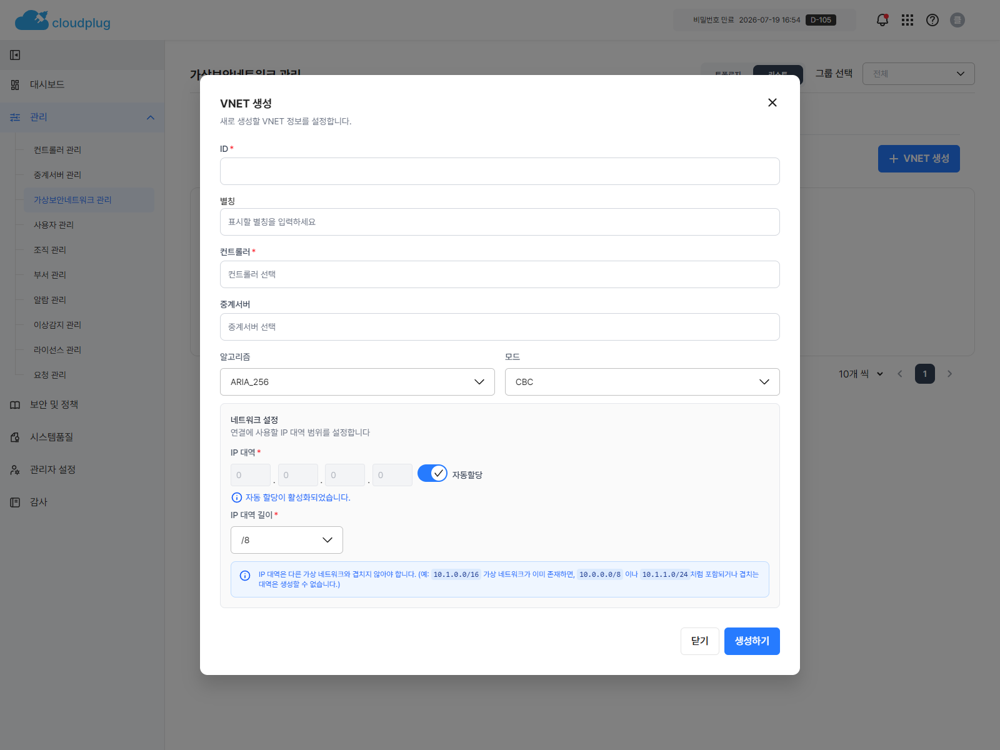 [VNET 생성 화면] |
▶기능 설명:
기존 VNET의 설정 값을 변경한다.
일부 핵심 설정(식별 정보 및 네트워크 구성 요소)은 변경이 제한되며, 허용된 항목에 한해 수정할 수 있다.
▶사용 절차:
1. VNET 목록 화면에서 수정할 VNET을 선택한다.
2. 수정 버튼을 클릭한다.
3. 변경 가능한 항목을 수정한다.
4. 저장 버튼을 클릭하여 변경 사항을 반영한다.
5. 수정 결과가 정상적으로 적용되었는지 확인한다.
▶입력 항목:
| 항목 | 설명 | 입력 가이드 |
|---|---|---|
| VNET 아이디 | 네트워크 식별 고유 아이디 | 수정 불가 |
| VNET 별칭 | 네트워크 별칭 | 선택 입력 |
| 컨트롤러 | 네트워크 관리 서버 선택 | 수정 불가 |
| 중계서버 | 통신 보조 서버 사용 여부 | 수정 불가 |
| 암호화 설정 | 데이터 암호화 규격 선택 | 수정 불가 |
| 네트워크 주소(CIDR) | 가상 IP 대역 설정 |
- 자동: 시스템에서 중복되지 않는 주소 임의 배정 - 수동: 8, 16, 24 비트 단위 중 선택하여 직접 입력 |
| 삭제 예정일 | 네트워크 자동 삭제 예약 | 필요 시 날짜 및 시간 지정 |
| 단말 접속 | 장치 연결 허용 여부 | 활성 시 단말의 네트워크 참여 허용 |
| 외부 트래픽 | 외부 인터넷 통신 허용 여부 | 활성 시 외부 네트워크 통신 허용 |
| 기기 인증 | 접속 기기 추가 인증 적용 여부 | 수정 불가 |
▶처리 결과 / 유의사항:
VNET 아이디, 컨트롤러, 중계서버, 암호화 설정, 기기 인증 항목은 시스템 구조 및 보안 정책과 직접적으로 연관되므로 수정할 수 없다.
CIDR 변경 시 기존 네트워크 주소 체계가 변경되므로, 연결된 엔드포인트의 통신에 영향을 줄 수 있다.
단말 접속, 외부 트래픽 설정 변경은 네트워크 접근 정책에 즉시 반영되며, 연결 상태에 영향을 줄 수 있다.
삭제 예정일을 설정하거나 변경할 경우, 지정된 시점에 네트워크가 자동 삭제되므로 운영 중인 네트워크인지 반드시 확인해야 한다.
변경 사항 저장 후에는 VNET 상태 및 연결된 엔드포인트의 통신 정상 여부를 반드시 점검해야 한다.
▶스크린샷:
|
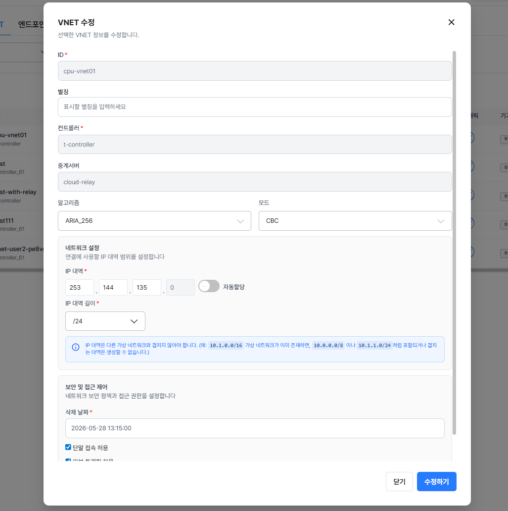 [VNET 수정 화면] |
▶기능 설명:
선택한 VNET을 시스템에서 삭제한다.
삭제된 VNET은 더 이상 네트워크 통신에 사용할 수 없으며, 관련된 모든 연결이 해제된다.
▶사용 절차:
1. VNET 목록 화면에서 삭제할 VNET을 선택한다.
2. 삭제 버튼을 클릭한다.
3. 확인 창에서 삭제 여부를 확인한 후 삭제를 확정한다.
4. 삭제 완료 후 목록에서 해당 VNET이 제거되었는지 확인한다.
▶처리 결과 / 유의사항:
삭제된 VNET은 복구할 수 없으므로, 삭제 전 대상이 정확한지 반드시 확인해야 한다.
해당 VNET에 연결된 엔드포인트 및 관련 리소스는 모두 연결이 해제되며, 통신이 중단된다.
사용 중인 네트워크를 삭제할 경우 서비스 장애가 발생할 수 있으므로, 사전에 영향 범위를 반드시 확인해야 한다.
일부 조건(연결된 자원 존재 등)에 따라 삭제가 제한될 수 있으며, 이 경우 선행 작업(엔드포인트 해제 등)이 필요하다.
삭제 완료 후에는 관련 서비스 상태 및 네트워크 연결 상태를 함께 점검해야 한다.
▶스크린샷:
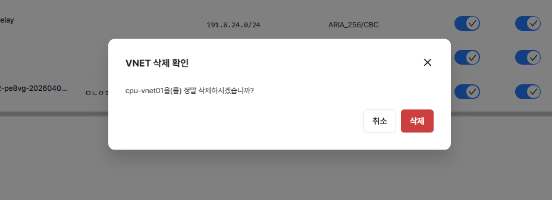 [VNET 삭제 화면] |
▶메뉴 위치: 좌측 메뉴 > 관리 > 가상보안네트워크 관리 > 엔드포인트
▶기능 설명:
등록된 엔드포인트 목록을 조회하고, 신규 생성, 수정, 삭제 기능을 제공한다.
각 엔드포인트에 대해 사용자 할당 여부, 연결 상태, 참여 허용, 외부 트래픽 허용 상태를 설정하고 관리할 수 있다.
엔드포인트를 선택하면 상세 패널이 열리며, 메모 작성 및 추가 설정을 수행할 수 있다.
▶사용 절차:
1. 엔드포인트 화면으로 이동한다.
2. 검색 및 필터를 설정하여 대상 엔드포인트를 조회한다.
3. 엔드포인트 생성 버튼을 클릭하여 신규 엔드포인트를 등록한다.
4. 목록에서 엔드포인트 행을 클릭하여 상세 패널을 연다.
5. 상세 패널에서 메모 작성, 토글 설정 변경, 수정 또는 삭제를 수행한다.
6. 변경 사항이 정상적으로 반영되었는지 확인한다.
▶화면 내 주요 버튼:
| 버튼명 | 설명 |
|---|---|
| 엔드포인트 생성 | 신규 엔드포인트를 등록한다. |
| 수정 | 선택한 엔드포인트 정보를 수정한다. |
| 삭제 | 선택한 엔드포인트를 삭제한다. |
▶주요 항목:
| 항목 | 설명 | 표시 정보 |
|---|---|---|
| 엔드포인트 아이디 | 단말 식별 아이디 및 소속 VNET | 정렬 아이콘(↑↓)으로 가나다순 정렬 가능 |
| 엔드포인트 별칭 | 단말 별칭 | |
| 역할 | 네트워크 내 단말의 역할 | HOST(일반 단말) 또는 게이트웨이(Gateway) 중 하나로 표시 |
| Virtual Address | 가상 IP 주소 | 가상 네트워크 대역 내에서 할당받은 고유 IP 주소 |
| 단말 접속 | 장치 접속 허용 여부 | 토글 스위치로 활성/비활성 상태 표시 |
| 외부 트래픽 | 외부 인터넷 통신 허용 여부 | 토글 스위치로 활성/비활성 상태 표시 |
| 상태 | 실시간 연결 여부 | 연결됨(초록) / 연결 안 됨(회색) 표시 |
| 사용자할당 | 단말을 사용하는 사용자 계정 | 해당 단말에 할당된 사용자 아이디 표시 |
▶처리 결과 / 유의사항:
사용자 할당 및 해제 기능을 통해 엔드포인트와 사용자 간 연결을 관리할 수 있다.
상세 패널에서 메모를 저장할 수 있으며, 운영 이력 또는 특이사항 기록에 활용할 수 있다.
참여 허용 및 외부 트래픽 허용 설정은 네트워크 접근 정책에 직접적인 영향을 미치므로 변경 시 주의해야 한다.
엔드포인트 삭제 시 해당 장치의 네트워크 연결이 해제되므로, 사용 중 여부를 사전에 확인해야 한다.
설정 변경 후에는 엔드포인트 상태(연결 여부)가 정상적으로 유지되는지 반드시 확인해야 한다.
▶스크린샷:
|
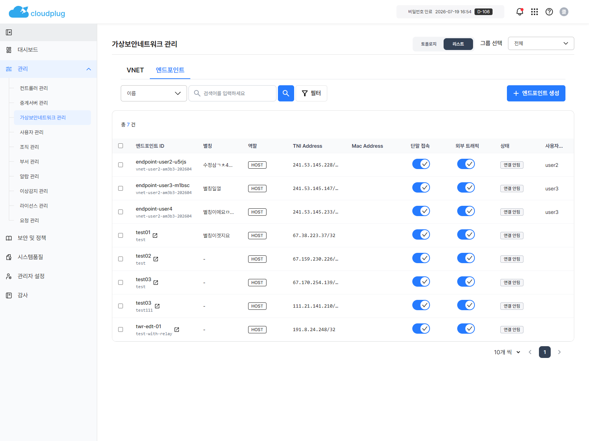 [엔드포인트 목록 화면] |
▶기능 설명:
신규 엔드포인트를 생성하여 VNET에 연결할 단말을 등록한다.
엔드포인트는 네트워크 내 통신 주체로 동작하며, 역할(HOST/GATEWAY)에 따라 설정 항목이 달라진다.
▶사용 절차:
1. 엔드포인트 생성 버튼을 클릭한다.
2. 엔드포인트 정보를 입력한다.
3. 저장 버튼을 클릭하여 등록을 완료한다.
4. 생성 완료 후 목록에 정상적으로 반영되었는지 확인한다.
▶입력 항목:
| 항목 | 설명 | 입력 가이드 |
|---|---|---|
| VNET | 소속 가상 네트워크 | 단말이 연결될 가상 네트워크(VNET)를 목록에서 선택 |
| 엔드포인트 아이디 | 단말 식별 아이디 |
- 영문, 숫자, 일부 특수문자(-)만 사용 가능 - 중복 불가 및 생성 후 수정 불가 |
| 역할 | 네트워크 내 단말의 역할 | HOST(일반 단말) 또는 게이트웨이(Gateway) 중 하나로 표시 |
| 네트워크 주소 | 가상 IP 주소 |
- 자동: 중복되지 않는 주소 자동 할당 - 수동: 8 / 16 / 24 비트 단위로 직접 입력 |
| 네트워크 인터페이스 | 장치 연결 통로 명칭 | 역할이 GATEWAY인 경우, 서버에 설정된 인터페이스 이름 입력 |
| UUID | 기기 고유 식별 번호 | 역할이 GATEWAY인 경우, 서버 소프트웨어에서 발급된 고유 번호 입력 |
| MAC 주소 | 기기 물리 식별 번호 | 역할이 GATEWAY인 경우, 00:11:22:33:44:55 형식에 맞춰 입력 |
| 리다이렉트 | 리다이렉트 설정 | 토글 스위치로 리다이렉트(트래픽 전환 기능) 여부 설정 |
| 리다이렉트 인터페이스 | 인터페이스 명칭 | 트래픽이 리다이렉트될 대상 인터페이스 명칭 입력 |
| 리다이렉트 IP | 리다이렉트 IP 입력 | 리다이렉트 IP 추가 버튼 클릭 후 전환 대상 IP 주소 입력 |
| 단말 접속 | 장치 접속 허용 여부 | 활성 시 네트워크 접속 허용 |
| 외부 트래픽 | 외부 인터넷 통신 허용 여부 | 활성 시 외부 통신 허용 |
▶처리 결과 / 유의사항:
엔드포인트 아이디는 고유 식별 값으로, 생성 이후 변경할 수 없다.
역할에 따라 입력 항목이 달라진다.
HOST: 기본 네트워크 정보만 입력
GATEWAY: 인터페이스, UUID, MAC 주소 입력 필수
CIDR 범위 내에서 중복되지 않는 IP를 사용해야 하며, 잘못 설정할 경우 통신 충돌이 발생할 수 있다.
리다이렉트 기능 활성화 시 트래픽 경로가 변경되므로, 설정 값(인터페이스/IP)을 정확히 입력해야 한다.
단말 접속 및 외부 트래픽 설정은 네트워크 접근 정책에 직접적인 영향을 미친다.
생성 후에는 엔드포인트 상태 및 실제 통신 여부를 반드시 확인해야 한다.
▶스크린샷:
|
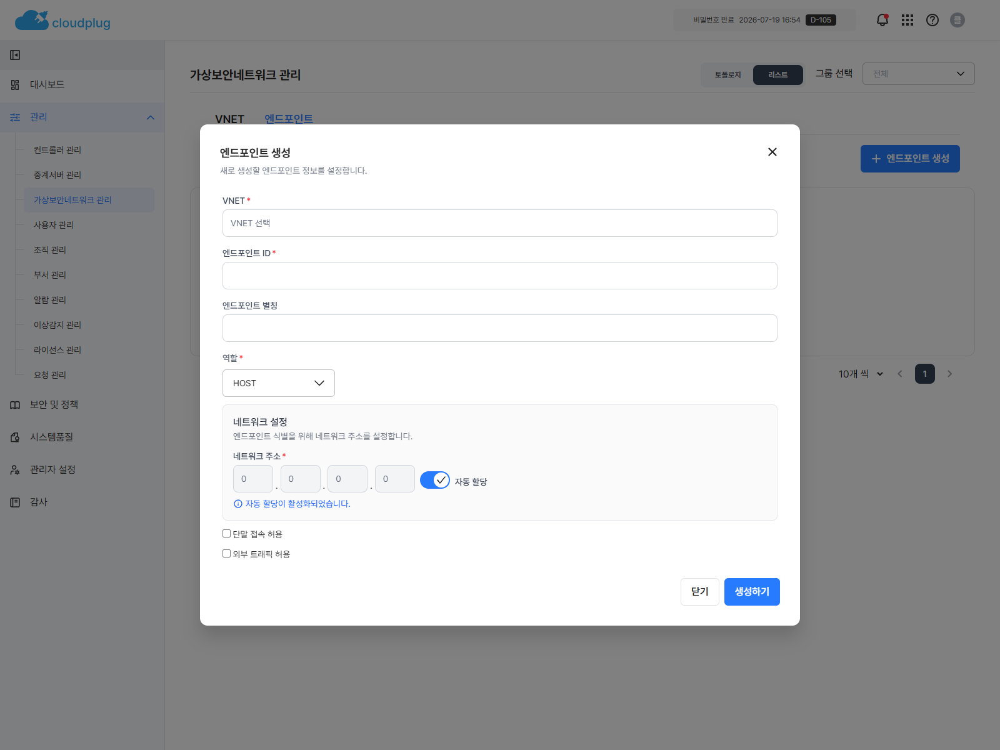 [엔드포인트 생성 화면] |
▶기능 설명:
등록된 엔드포인트의 설정 정보를 변경한다.
일부 식별 정보 및 역할 관련 항목은 변경이 제한되며, 허용된 항목에 한해 수정할 수 있다.
▶사용 절차:
1. 엔드포인트 목록 화면에서 수정할 엔드포인트를 선택한다.
2. 수정 버튼을 클릭한다.
3. 변경 가능한 항목을 수정한다.
4. 저장 버튼을 클릭하여 변경 사항을 반영한다.
5. 수정 결과가 정상적으로 적용되었는지 확인한다.
▶입력 항목:
| 항목 | 설명 | 입력 가이드 |
|---|---|---|
| VNET | 소속 가상 네트워크 | 단말이 연결될 가상 네트워크(VNET)를 목록에서 선택 |
| 엔드포인트 아이디 | 단말 식별 아이디 | 수정 불가 |
| 엔드포인트 별칭 | 단말 별칭 | 선택 입력 |
| 역할 | 네트워크 내 단말의 역할 | 수정 불가 |
| 네트워크 주소 | 가상 IP 주소 |
- 동작(연결) 중인 엔드포인트는 수정 불가 - 자동: 시스템에서 중복되지 않는 주소 임의 배정 - 수동: 8, 16, 24 비트 단위 중 선택하여 직접 입력 |
| 단말 접속 | 장치 접속 허용 여부 | 활성 시 네트워크 접속 허용 |
| 외부 트래픽 | 외부 인터넷 통신 허용 여부 | 활성 시 외부 통신 허용 |
▶처리 결과 / 유의사항:
엔드포인트 아이디 및 역할은 시스템 식별 및 구조와 연관된 항목으로 수정할 수 없다.
엔드포인트가 연결(동작) 중인 상태에서는 네트워크 주소(CIDR) 변경이 제한된다.
VNET을 변경할 경우 기존 네트워크 연결이 변경되므로, 통신 경로 및 정책에 영향을 줄 수 있다.
단말 접속 및 외부 트래픽 설정 변경은 즉시 적용되며, 네트워크 접근 및 통신 가능 여부에 영향을 준다.
변경 사항 저장 후에는 엔드포인트 상태 및 실제 통신 여부를 반드시 확인해야 한다.
▶스크린샷:
|
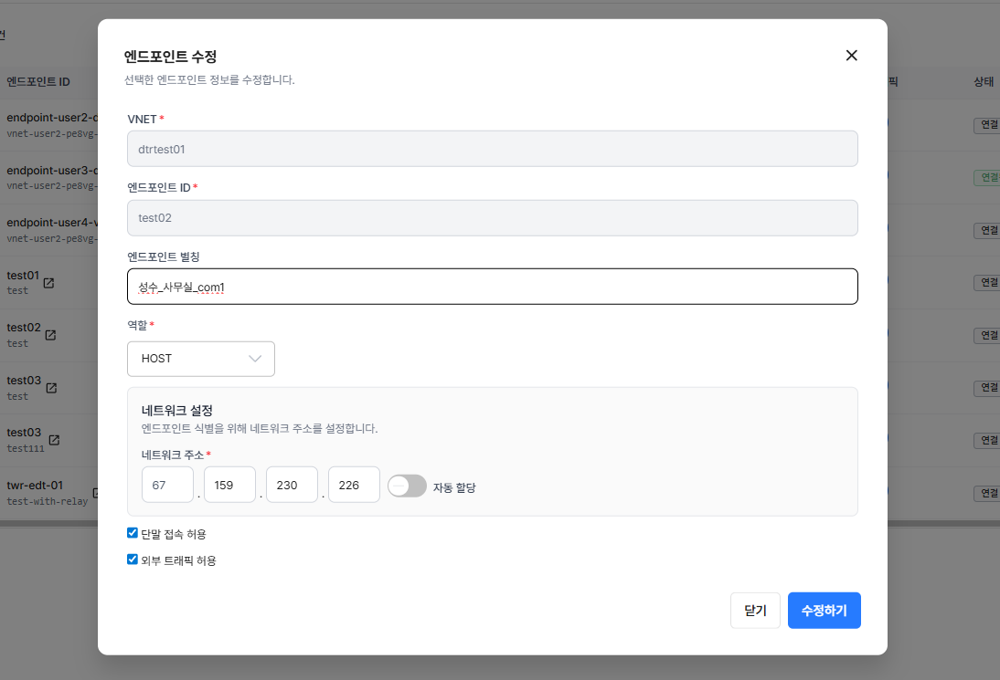 [엔드포인트 수정 화면] |
▶기능 설명:
선택한 엔드포인트를 시스템에서 삭제한다.
삭제된 엔드포인트는 네트워크에서 제거되며, 해당 단말의 연결이 해제된다.
▶사용 절차:
1. 엔드포인트 목록 화면에서 삭제할 엔드포인트를 선택한다.
2. 삭제 버튼을 클릭한다.
3. 확인 창에서 삭제 여부를 확인한 후 삭제를 확정한다.
4. 삭제 완료 후 목록에서 해당 엔드포인트가 제거되었는지 확인한다.
▶처리 결과 / 유의사항
엔드포인트 삭제 시 해당 단말에 할당된 사용자는 자동으로 할당 해제된다.
삭제 승인 대기 상태인 엔드포인트는 중복으로 삭제 요청을 할 수 없다.
삭제 완료 시 엔드포인트의 모든 설정 정보는 제거되며, 삭제된 데이터는 복구할 수 없다.
삭제된 엔드포인트는 네트워크에서 즉시 제외되므로, 해당 단말의 통신이 중단된다.
운영 중인 엔드포인트를 삭제할 경우 서비스에 영향이 발생할 수 있으므로, 사전에 사용 여부를 반드시 확인해야 한다.
▶스크린샷:
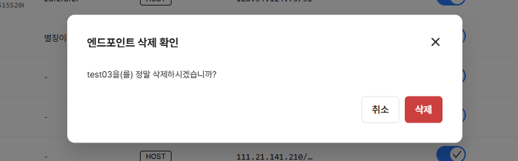 [엔드포인트 삭제 화면] |
▶기능 설명:
선택한 엔드포인트에 사용자를 할당하여 해당 단말을 특정 사용자에게 연결한다.
사용자 할당을 통해 엔드포인트 사용 권한을 관리할 수 있다.
▶사용 절차:
1. 엔드포인트 목록 화면에서 할당할 엔드포인트를 선택한다.
2. 사용자 할당 버튼을 클릭한다.
3. 사용자 목록에서 할당할 사용자를 선택한다.
4. 선택 내용을 확인하고 할당을 완료한다.
5. 할당 결과가 정상적으로 반영되었는지 확인한다.
▶처리 결과 / 유의사항
하나의 엔드포인트에는 하나의 사용자만 할당할 수 있다.
이미 사용자가 할당된 엔드포인트에는 추가 할당이 불가능하다.
사용자 할당 요청에 대한 결재가 진행 중인 경우, 중복으로 할당을 수행할 수 없다.
사용자 할당이 완료되면 해당 엔드포인트는 지정된 사용자와 연결되어 사용된다.
할당 이후에는 사용자 및 엔드포인트 상태를 함께 확인하여 정상적으로 반영되었는지 점검해야 한다.
▶스크린샷:
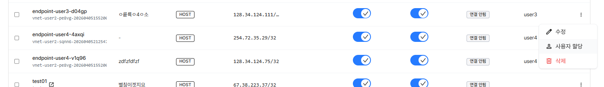 [엔드포인트 사용자 할당 화면] |
▶기능 설명:
엔드포인트에 할당된 사용자를 해제하여 해당 단말과 사용자 간 연결을 제거한다.
할당 해제 후 해당 엔드포인트는 미할당 상태로 변경된다.
▶사용 절차:
1. 엔드포인트 목록 화면에서 할당 해제할 엔드포인트를 선택한다.
2. 사용자 할당 버튼을 클릭한다.
3. 현재 할당된 사용자를 확인한 후 해제 작업을 수행한다.
4. 해제 결과가 정상적으로 반영되었는지 확인한다.
▶처리 결과 / 유의사항
사용자 할당 해제 요청에 대한 결재가 진행 중인 경우, 해제 작업을 수행할 수 없다.
할당 해제 완료 시 해당 엔드포인트는 미할당 상태로 변경되며, 기존 사용자와의 연결이 제거된다.
VNET 생성 또는 수정 시 설정한 삭제 예정일이 도달하면, 해당 VNET에 포함된 엔드포인트 및 사용자 할당 정보가 함께 자동 삭제된다.
할당 해제 후에는 엔드포인트 상태 및 사용자 연결 상태가 정상적으로 반영되었는지 확인해야 한다.
▶스크린샷:
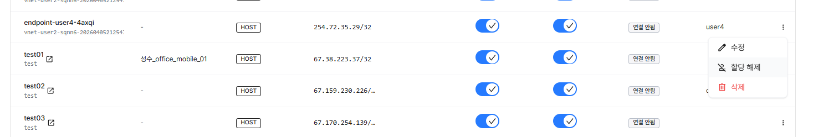 [엔드포인트 사용자 할당 해제 화면] |
선택한 네트워크 내에 구성된 엔드포인트 간의 물리적/논리적 연결 상태를 시각적인 지도로 확인한다.
드래그 앤 드롭 방식을 통해 직관적으로 자원을 추가하고 네트워크 구조를 설계할 수 있다.
▶메뉴 위치: 좌측 메뉴 > 관리 > 가상보안네트워크 관리 > 토폴로지
▶기능 설명:
네트워크 토폴로지를 그래프 형태로 시각화하여 표시한다.
VNET 및 엔드포인트를 화면 내에서 직접 생성할 수 있다.
자동 배치 기능을 통해 그래프 구조를 정렬할 수 있다.
선택한 엔드포인트의 상세 정보 및 메모를 확인할 수 있다.
▶사용 절차:
1. 토폴로지 화면으로 이동한다.
2. 검색 조건을 설정하여 대상 VNET 또는 엔드포인트를 조회한다.
3. 그래프 영역에서 확인할 대상을 선택한다.
4. 상세 패널에서 상태 및 메모 정보를 확인한다.
5. 필요 시 자원을 드래그하여 위치를 조정하거나, 자동 배치 기능을 실행한다.
6. VNET 생성 또는 엔드포인트 생성 기능을 통해 자원을 추가한다.
▶화면 내 주요 버튼:
| 버튼명 | 설명 |
|---|---|
| VNET 생성 | 새로운 VNET을 생성한다. |
| 엔드포인트 생성 | 새로운 엔드포인트를 생성한다. |
| 자동 배치 | 그래프 내 자원 위치를 자동으로 정렬한다. |
▶처리 결과 / 유의사항:
토폴로지 화면은 선택한 조직 및 VNET 기준으로 데이터가 표시되므로, 작업 전 대상 범위를 반드시 확인해야 한다.
드래그 앤 드롭으로 변경한 위치는 시각적 배치에 영향을 주며, 실제 네트워크 연결 구조에는 영향을 주지 않는다.
상세 패널의 일부 상태 정보는 실시간 이벤트(SSE 등)에 의해 자동 갱신될 수 있다.
네트워크 구조 변경(엔드포인트 추가/삭제 등) 후에는 연결 상태 및 통신 여부를 반드시 확인해야 한다.
자동 배치 기능 사용 시 기존 수동 배치 위치가 변경될 수 있으므로 필요 시 재조정이 필요하다.
▶스크린샷:
|
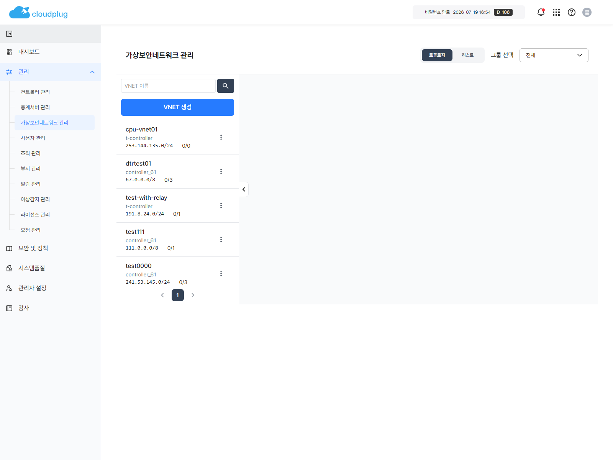 [토폴로지 화면] |
▶기능 설명:
토폴로지 화면에서 엔드포인트를 생성하거나, 그래프 상의 위치를 조정하여 네트워크 구조를 시각적으로 관리할 수 있다.
배치는 사용자 편의성을 위한 기능이며, 실제 네트워크 연결에는 영향을 주지 않는다.
▶사용 절차:
1. 드래그 생성: 스텐실 영역의 구성 요소를 지도 영역으로 드래그하면 엔드포인트 생성 팝업이 표시된다.
2. 자유 배치: 지도 상의 엔드포인트 아이콘을 마우스로 드래그하여 원하는 위치로 이동할 수 있다.이를 통해 관리하기 편한 형태로 네트워크 구조를 시각적으로 정리할 수 있다.
3. 자동 배치: 네트워크 구성이 복잡한 경우 자동 배치 버튼을 클릭하여 전체 그래프를 정렬할 수 있다.
▶처리 결과 / 유의사항:
드래그 생성 시 선택한 역할(Gateway/Host)은 생성 이후 변경이 제한될 수 있으므로 신중하게 선택해야 한다.
자유 배치는 화면 상의 위치만 변경되며, 실제 네트워크 연결 구조나 통신에는 영향을 주지 않는다.
자동 배치 실행 시 기존 수동 배치 위치는 초기화되므로 필요 시 다시 조정해야 한다.
엔드포인트 생성 후에는 상태 및 연결 여부를 반드시 확인해야 한다.
▶스크린샷:
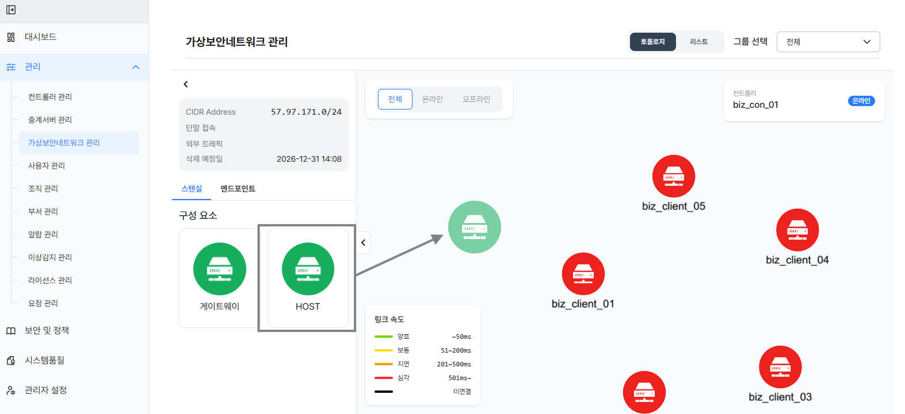 [토폴로지 엔드포인트 생성 화면] |
▶메뉴 위치: 좌측 메뉴 > 관리 > 사용자 관리
▶기능 설명:
사용자 목록을 조회하고, 생성, 수정, 삭제, 계정 잠금/해제, 엔드포인트(장치) 할당 기능을 제공한다.
전체 탭과 관리자 탭을 전환하여 사용자 유형에 따라 조회할 수 있다.
사용자별 권한 상태와 할당된 장치 정보를 함께 관리할 수 있다.
▶사용 절차:
1. 사용자 관리 메뉴로 이동한다.
2. 검색 및 필터를 설정하여 대상 사용자를 조회한다.
3. 사용자 항목을 선택하여 상세 패널을 연다.
4. 필요에 따라 장치 할당/해제, 계정 잠금/해제 등의 작업을 수행한다.
5. 변경 사항이 정상적으로 반영되었는지 확인한다.
▶화면 내 주요 버튼:
| 버튼명 | 설명 |
|---|---|
| 관리자 탭 | 관리자 권한을 가진 사용자만 별도로 조회한다. |
| 장치 할당 | 선택한 사용자에게 엔드포인트를 연결한다. |
▶주요 관리 항목:
| 항목 | 설명 |
|---|---|
| 사용자 상태 | 정상, 잠금 등 계정 상태 |
| 권한 유형 | 일반 사용자 / 관리자 구분 |
| 장치 할당 | 사용자와 엔드포인트 연결 여부 |
| 결재 정보 | 결재권자 및 최종 결재권자 정보 |
▶처리 결과 / 유의사항:
조직 컨텍스트에 따라 조회 범위가 결정되며, 선택한 조직 기준으로 사용자 목록이 표시된다.
사용자 생성 및 관리 시 조직, 부서, 직위 체계가 사전에 정의되어 있어야 결재 프로세스를 정상적으로 운영할 수 있다.
사용자 상세 화면에서는 최종 결재권자 및 결재권자 정보가 함께 표시되므로, 권한 및 승인 흐름을 확인할 수 있다.
사용자 잠금 상태에서는 시스템 접근이 제한되며, 해제 후 정상 이용이 가능하다.
장치(엔드포인트) 할당 상태는 사용자 접근 및 네트워크 이용 권한에 직접적인 영향을 미친다.
▶스크린샷:
|
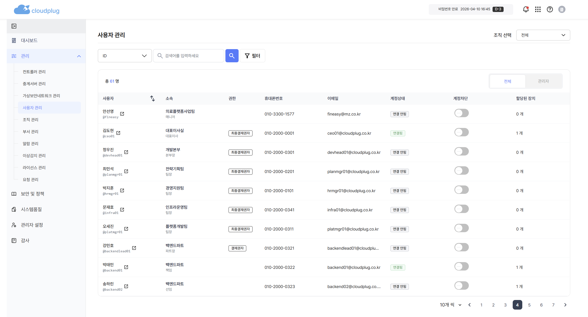 [사용자 관리 화면] |
▶기능 설명:
검색 및 필터 조건을 기준으로 사용자 목록을 조회한다.
조회 결과를 통해 사용자 계정 정보, 권한, 상태, 장치 할당 현황 등을 확인할 수 있다.
▶사용 절차:
1. 사용자 목록 화면으로 이동한다.
2. 검색 조건과 필터를 설정한다.
3. 조회를 실행하여 사용자 목록을 확인한다.
4. 각 사용자 항목의 상세 정보를 확인한다.
▶주요 항목:
| 항목 | 설명 | 표시 정보 |
|---|---|---|
| 사용자 | 계정 식별 정보 | 사용자 성명 및 아이디 표시 |
| 소속 | 조직 내 소속 | 소속 부서 및 직위 표기 |
| 권한 | 시스템 권한 및 결재 권한 | 권한 등급 및 [최종결재권자], [결재권자] 여부 표시 |
| 휴대폰 번호 | 사용자 연락처 | 등록된 휴대폰 번호 표시 |
| 이메일 | 사용자 이메일 주소 | 등록된 이메일 표시 |
| 계정상태 | 실시간 접속 여부 | 연결됨(초록)/연결 안 됨(회색)으로 실시간 표시 |
| 계정차단 | 접속 권한 제어 | 토글 활성 시 해당 사용자의 시스템 접근 즉시 차단 |
| 할당된 장치 | 단말 연결 현황 | 사용자에게 할당된 엔드포인트 개수 표시 |
▶처리 결과 / 유의사항:
조직 컨텍스트에 따라 조회 범위가 달라지며, 선택한 조직 기준으로 사용자 목록이 표시된다.
검색어는 부분 일치로 조회되므로, 사용자 이름 또는 아이디 일부만 입력해도 검색이 가능하다.
계정상태는 실시간 연결 상태를 기준으로 표시되며, 네트워크 상태에 따라 변동될 수 있다.
계정차단을 활성화할 경우 해당 사용자의 시스템 접근이 즉시 제한되므로 신중하게 설정해야 한다.
할당된 장치 수를 통해 사용자의 네트워크 사용 현황을 확인할 수 있으며, 필요 시 엔드포인트 관리 화면과 연계하여 확인해야 한다.
▶사용 절차:
1. 사용자 목록 화면에서 상세 정보를 확인할 사용자를 선택한다.
2. 선택한 사용자에 대한 상세 패널을 확인한다.
4. 사용자 기본 정보와 함께 할당된 장치(엔드포인트) 정보를 확인한다.
▶스크린샷:
|
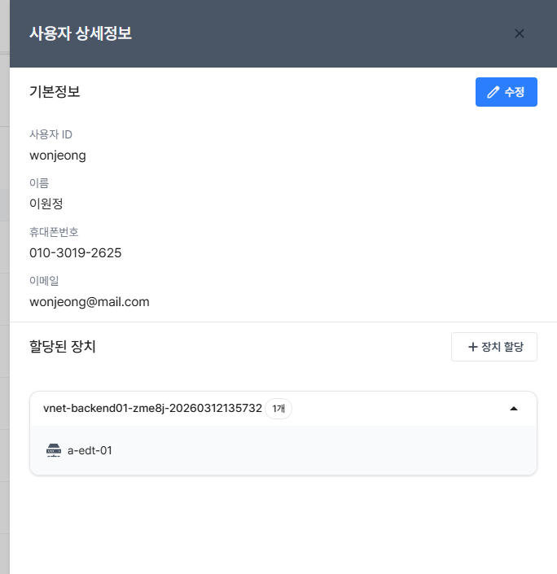 [사용자 상세 정보 화면] |
▶메뉴 위치: 좌측 메뉴 > 관리 > 조직 관리
▶기능 설명:
각 조직은 서로 독립된 운영 환경을 가지며, 조직별 관리자를 통해 분리된 권한과 설정으로 운영된다.
조직 목록을 카드 형태로 조회할 수 있으며, 조직 정보 수정, 삭제 예약, 즉시 삭제, 삭제 예약 취소 기능을 제공한다.
▶사용 절차:
1. 조직 관리 메뉴로 이동한다.
2. 조직명을 검색하거나 전체 목록을 확인한다.
3. 대상 조직을 선택하여 수정 화면을 연다.
4. 필요에 따라 조직 정보 수정, 삭제 예약, 즉시 삭제, 삭제 예약 취소 작업을 수행한다.
5. 작업 결과가 정상적으로 반영되었는지 확인한다.
▶입력 항목:
| 항목 | 설명 | 입력 가이드 |
|---|---|---|
| 조직명 검색 | 조직 조회 키워드 | Enter로 조회 |
▶화면 내 주요 버튼:
| 버튼명 | 설명 | 수정 | 조직 정보를 수정한다. |
|---|---|
| 삭제 예약 | 일정 후 삭제 상태로 전환한다. |
| 즉시 삭제 | 즉시 삭제를 수행한다. |
▶처리 결과 / 유의사항:
각 조직은 독립된 데이터 및 네트워크 환경을 가지므로, 조직 간 자원은 상호 공유되지 않는다.
조직 삭제 시 해당 조직에 속한 모든 자원(VNET, 사용자, 엔드포인트 등)이 함께 영향을 받을 수 있다.
삭제 예약 기능을 통해 특정 시점에 조직을 자동 삭제할 수 있으며, 예약된 작업은 취소할 수 있다.
즉시 삭제는 되돌릴 수 없는 작업이므로, 수행 전 반드시 대상 조직과 영향 범위를 확인해야 한다.
조직 수정 시 일부 설정 변경은 해당 조직 전체 운영에 영향을 줄 수 있으므로 신중하게 수행해야 한다.
▶기능 설명:
검색 및 필터 조건을 기준으로 조직 목록을 조회한다.
조회 결과를 통해 각 조직의 기본 정보와 자원 사용 현황(사용자, VNET, 엔드포인트)을 확인할 수 있다.
▶사용 절차:
1. 조직 목록 화면으로 이동한다.
2. 검색 조건과 필터를 설정한다.
3. 조회를 실행하여 조직 목록을 확인한다.
4. 각 조직의 상세 정보 및 사용량 현황을 확인한다.
▶주요 항목:
| 항목 | 설명 | 표시 정보 |
|---|---|---|
| 조직명 | 조직 식별을 위한 고유 명칭 | 그룹의 한글 명칭 및 영문 식별자 표시 |
| 조직 설명 | 조직의 용도 및 소속 정보 | 조직 생성 시 입력한 간단한 설명 문구 표시 |
| 유저 사용량 | 할당된 사용자 수 대비 사용 현황 | 현재 생성된 사용자 수 / 최대 허용 사용자 수 표시 |
| VNET 사용량 | 할당된 가상 네트워크 수 대비 사용 현황 | 현재 생성된 VNET 수 / 최대 허용 VNET 수 표시 |
| 엔드포인트 사용량 | 할당된 단말 수 대비 실사용 현황 | 현재 등록된 엔드포인트 수 / 최대 허용 수 표시 |
▶스크린샷:
|
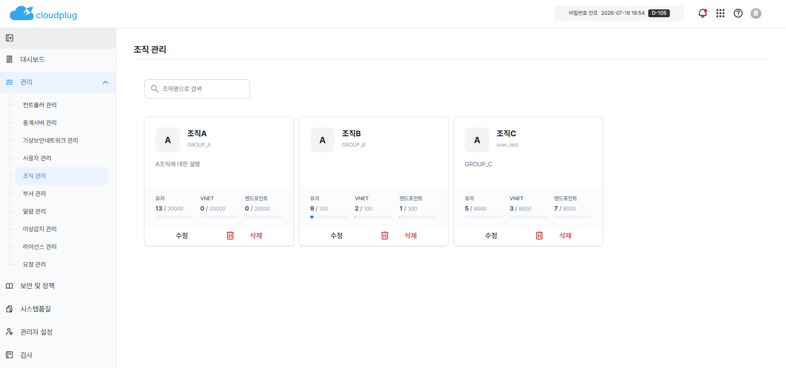 [조직 목록 조회] |
▶메뉴 위치: 좌측 메뉴 > 관리 > 부서 관리
▶기능 설명:
조직 트리 구조를 기반으로 부서와 직위를 관리한다.
부서 생성, 수정, 삭제와 함께 직위 추가, 수정, 순서 변경, 삭제 기능을 제공한다.
부서 및 직위 구조는 사용자 생성 및 결재 체계에 직접적으로 반영된다.
▶사용 절차:
1. 부서 관리 메뉴로 이동한다.
2. 트리에서 조직 또는 부서를 선택한다.
3. 필요 시 하위부서 생성 버튼을 클릭하여 하위 부서를 추가한다.
4. 부서명, 연락처, 설명을 입력 또는 수정한다.
5. 직위 목록을 추가, 수정, 순서 변경 또는 삭제한다.
6. 변경사항 저장 버튼을 클릭하여 내용을 반영한다.
▶입력 항목:
| 항목 | 설명 | 입력 가이드 |
|---|---|---|
| 부서 명 | 부서명 | 선택된 부서 기준 |
| 부서 연락처 | 연락처 | 숫자 또는 지정된 형식에 맞게 입력 |
| 부서 설명 | 설명 | 필요 시 입력 |
▶화면 내 주요 버튼:
| 버튼명 | 설명 |
|---|---|
| 하위부서 생성 | 선택된 부서 하위에 새로운 부서를 생성한다. |
| 부서 삭제 | 선택한 부서를 삭제한다. |
| 변경사항 저장 | 부서 정보 또는 직위 변경 내용을 저장한다. |
| 새 직위 생성 | 직위 항목을 추가한다. |
▶처리 결과 / 유의사항:
조직 노드를 선택한 경우 일부 입력 항목은 비활성화되며, 직접 수정이 제한될 수 있다.
조직 컨텍스트에 따라 조회 및 작업 범위가 제한될 수 있으므로, 작업 전 대상 조직을 확인해야 한다.
부서 및 직위 구조는 사용자 생성 및 결재 흐름에 즉시 반영되므로, 변경 후 반드시 변경사항 저장을 수행해야 한다.
부서를 삭제할 경우 해당 부서에 속한 사용자 및 하위 부서에 영향이 발생할 수 있으므로, 사전에 구조를 확인해야 한다.
직위 순서는 결재 흐름 및 표시 순서에 영향을 줄 수 있으므로 변경 시 주의해야 한다.
▶스크린샷:

[부서 관리 화면] |

[직위 생성 팝업] |
▶메뉴 위치: 좌측 메뉴 > 관리 > 알람 관리
▶기능 설명:
시스템에서 발생한 알람을 조회하고, 조건별 필터링, 기간 조회, 상세 확인, 코멘트 작성, 해결 처리 기능을 제공한다.
알람을 통해 시스템 상태 및 장애 발생 여부를 확인하고, 조치 이력을 관리할 수 있다.
▶사용 절차:
1. 알람 관리 메뉴로 이동한다.
2. 심각도, 유형, 네트워크 유형, 해결 여부, 기간 조건을 설정한다.
3. 조회를 실행하여 알람 목록을 확인한다.
4. 목록에서 알람 번호를 클릭하여 상세 패널을 연다.
5. 코멘트를 작성하거나 해결 처리를 수행한다.
6. 변경 결과가 정상적으로 반영되었는지 확인한다.
▶화면 내 주요 버튼:
| 버튼명 | 설명 |
|---|---|
| 필터 | 조회 조건을 설정한다. |
| 해결 처리 | 선택한 알람을 해결 상태로 변경한다. |
▶처리 결과 / 유의사항:
조직 컨텍스트를 적용하여 특정 조직 범위의 알람만 조회할 수 있다.
상세 패널에서 알람에 대한 코멘트 조회 및 등록이 가능하며, 조치 이력 관리에 활용해야 한다.
미해결 알람을 우선적으로 확인하고, 장애 발생 시 신속하게 원인을 분석해야 한다.
해결 처리 시 반드시 조치 내용을 코멘트로 기록하여 이후 이력 추적이 가능하도록 해야 한다.
알람 해결 상태 변경은 운영 이력에 영향을 주므로, 실제 조치 완료 여부를 확인한 후 수행해야 한다.
▶스크린샷:

[알람 관리 화면] |
▶기능 설명:
선택한 알람의 상세 정보를 확인하고, 발생 원인 및 처리 상태를 파악한다.
코멘트를 통해 조치 이력을 확인할 수 있다.
▶사용 절차:
1. 알람 목록 화면에서 상세 정보를 확인할 알람을 선택한다.
2. 상세 패널을 열어 알람의 상세 정보 및 코멘트를 확인한다.
▶주요 항목:
| 항목 | 설명 | 표시 정보 |
|---|---|---|
| 해결 상태 | 해결 여부 상태 |
- 해결 안 됨(빨강) / 해결됨(파랑) 상태 표시 - [알람 해제] 버튼을 통해 상태 변경 가능 |
| 알람 메시지 | 알람의 상세 메시지 | 발생 원인 및 대상(사용자, 장비 등) 관련 메시지 표시 |
| 주요 정보 | 알람의 심각도, 유형, 네트워크 유형 |
- 심각도 (긴급, 경고, 주의, 정보) - 유형 (보안, 리소스, 장애, 정보) - 네트워크 유형 (가상보안네트워크, 인프라, 네트워크) 표시 |
| 시간 정보 | 발생 및 해결 시점 |
- 알람 시각: 최초 감지된 시각 - 해결 시각: 조치가 완료된 시각 |
▶처리 결과 / 유의사항:
해결 상태는 알람 처리 여부를 나타내며, 실제 조치 완료 이후에 변경해야 한다.
알람 해결 버튼을 통해 상태를 변경할 수 있으며, 변경 즉시 목록 및 상태 정보에 반영된다.
알람 메시지를 통해 장애 원인 및 영향을 받는 대상을 파악할 수 있다.
코멘트를 함께 확인하여 이전 조치 이력 및 대응 내용을 참고해야 한다.
해결 시각은 알람 상태가 해결됨으로 변경된 시점에 기록된다.
▶스크린샷:
|
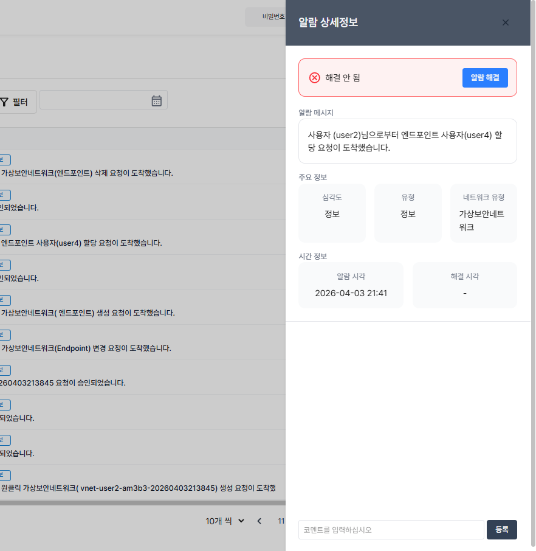 [알람 상세 정보 화면] |
▶기능 설명:
선택한 알람에 대해 조치 내용을 기록하고, 상태를 해결됨으로 변경한다.
해결 처리 시 조치 이력이 저장되며, 이후 이력 조회에 활용된다.
▶사용 절차:
1. 알람 목록 화면에서 해결할 알람을 선택한다.
2. 알람 상세 패널에서 알람 해결 버튼을 클릭한다.
3. 작업 내역을 입력한다.
4. 해결 버튼을 클릭하여 처리한다.
5. 처리 결과가 정상적으로 반영되었는지 확인한다.
▶주요 항목:
| 항목 | 설명 | 입력 가이드 |
|---|---|---|
| 작업자 | 조치를 수행한 관리자 계정 | 현재 로그인한 관리자 ID 자동 표시 (수정 불가) |
| 작업 내역 | 장애 조치 또는 승인 내용 기록 | 최대 2,000자까지 입력 가능 |
▶처리 결과 / 유의사항:
알람 해결 시 상태가 해결 안 됨에서 해결됨으로 변경되며, 해결 시각이 자동으로 기록된다.
해결 처리 시 입력한 작업 내역은 조치 이력으로 저장되며, 이후 상세 화면에서 확인할 수 있다.
이미 해결된 알람은 재처리(재해결 또는 해제)가 불가능하며, 이력 조회만 가능하다.
해결 처리 전 실제 장애 조치가 완료되었는지 반드시 확인해야 한다.
조치 내용은 이후 운영 및 감사에 활용되므로, 구체적으로 작성하는 것이 권장된다.
▶스크린샷:
|
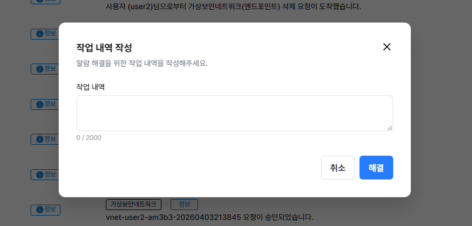 [알람 해결 화면] |
▶기능 설명:
알람에 대한 추가 정보, 진행 상황, 특이사항 등을 코멘트 형태로 기록하고 공유한다.
코멘트는 조치 이력 보완 및 협업을 위한 참고 자료로 활용된다.
▶사용 절차:
1. 알람 목록 화면에서 코멘트를 확인하거나 작성할 알람을 선택한다.
2. 알람 상세 패널에서 코멘트 목록을 확인한다.
3. 필요 시 코멘트를 입력한다.
4. 등록 후 정상적으로 반영되었는지 확인한다.
▶주요 항목:
| 항목 | 설명 | 입력 가이드 |
|---|---|---|
| 코멘트 내용 | 공유 및 기록용 상세 메모 |
- 최소 1자 이상, 최대 1,000자 이하로 작성 가능 - 조치 진행 상황 또는 특이사항 기록 |
| 작성자 | 코멘트 등록 계정 | 현재 로그인한 관리자 ID 자동 표시 (수정 불가) |
▶처리 결과 / 유의사항:
코멘트는 알람의 조치 과정 및 상태 공유를 위한 기록으로 활용된다.
코멘트는 시간 순으로 누적 저장되며, 이전 이력을 함께 확인할 수 있다.
해결 처리 전 진행 상황을 기록하거나, 해결 후 조치 내용을 보완하는 용도로 사용할 수 있다.
코멘트 내용은 운영 및 감사 이력으로 활용되므로, 명확하고 구체적으로 작성하는 것이 권장된다.
▶스크린샷:
|
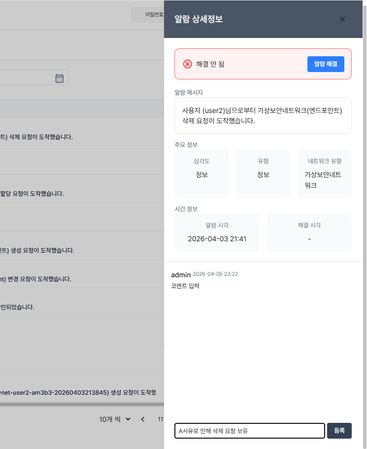 [알람 코멘트 화면] |
▶메뉴 위치: 좌측 메뉴 > 관리 > 이상감지 관리
▶기능 설명:
시스템 운영 중 발생할 수 있는 보안 위협, 장애, 리소스 과부하 상황을 감지하기 위한 임계치를 설정한다.
설정된 기준에 따라 이상 징후 발생 시 자동으로 알람을 생성하여 운영자가 즉시 대응할 수 있도록 지원한다.
▶알람 연동 및 확인:
이상감지 관리에서 설정한 주의, 경고, 긴급 단계의 기준값에 도달하면 시스템은 자동으로 알람을 발생시킨다.
발생한 알람은 알람 관리 메뉴에서 실시간으로 확인할 수 있다.
▶이상감지 분류 및 설정 항목:
| 분류 | 주요 설정 및 감지 항목 | 알람 발생 목적 |
|---|---|---|
| 보안 | 비정상 접근 시도 수, 외부 트래픽(LAN→WAN) 감시, 이상 트래픽 감지 | 비인가 접근 및 정보 유출 시도 탐지 |
| 장애 | 오류 발생률, 서비스 응답 지연 시간 | 서비스 품질 저하 및 장애 조기 감지 |
| 리소스 | CPU 사용률, 메모리 사용률 | 자원 부족으로 인한 시스템 장애 예방 |
▶공통 설정 방법:
각 항목은 위험 수준에 따라 3단계로 수치를 입력하며, 설정된 기준을 초과하면 해당 수준에 맞는 심각도의 알람이 생성된다.
| 항목 | 설명 |
|---|---|
| 주의 | 초기 이상 징후 발생 단계 (관찰 필요) |
| 경고 | 즉각적인 원인 분석 및 모니터링 필요 |
| 긴급 | 시스템 장애 또는 보안 침해로 즉시 조치 필요 |
▶처리 결과 / 유의사항:
조직 컨텍스트에 따라 설정 범위가 적용되며, 선택한 조직 기준으로 감지 정책이 저장된다.
설정된 임계값을 초과하는 이벤트가 발생하면, 알람 관리 메뉴에 자동으로 기록된다.
임계값이 너무 낮으면 오탐(false positive)이 증가하고, 너무 높으면 실제 이상 징후를 놓칠 수 있다.
이상감지 설정 변경 후에는 알람 발생 패턴을 지속적으로 모니터링하여 기준값을 보정하는 것이 권장된다.
▶스크린샷:

[이상감지 관리 화면] |
▶기능 설명:
보안 관련 이상 징후를 감지하기 위한 임계값을 설정한다.
▶사용 절차:
1. 좌측 메뉴에서 관리 > 이상감지 관리 > 보안으로 이동한다.
2. 각 감지 항목에 대한 임계값을 입력한다.
3. 저장 버튼을 클릭하여 설정을 반영한다.
4. 설정 이후 알람 발생 여부를 통해 기준값이 적절한지 확인한다.
▶주요 설정 항목:
외부 트래픽 감시: 가상망 내부에서 외부(Internet)로 나가는 트래픽의 이상 징후를 감지한다.
비정상 접근 시도: 짧은 시간 내 반복되는 로그인 실패나 비인가 접속 시도 횟수를 설정한다.
이상 트래픽: 평상시 범위를 벗어난 대용량 데이터 전송 행위를 감지한다.
▶처리 결과 / 유의사항:
설정한 임계값을 초과할 경우, 설정된 단계(주의/경고/긴급)에 따라 알람이 자동 생성된다.
조직 컨텍스트에 따라 설정이 적용되므로, 작업 전 대상 조직을 반드시 확인해야 한다.
비정상 접근 시도 기준이 너무 낮으면 정상 사용자도 차단 대상이 될 수 있으므로 주의해야 한다.
외부 트래픽 및 이상 트래픽 감지 기준은 네트워크 사용 패턴에 맞게 설정해야 한다.
설정 변경 후에는 실제 알람 발생 여부를 모니터링하여 기준값을 지속적으로 조정하는 것이 권장된다.
▶스크린샷:
|
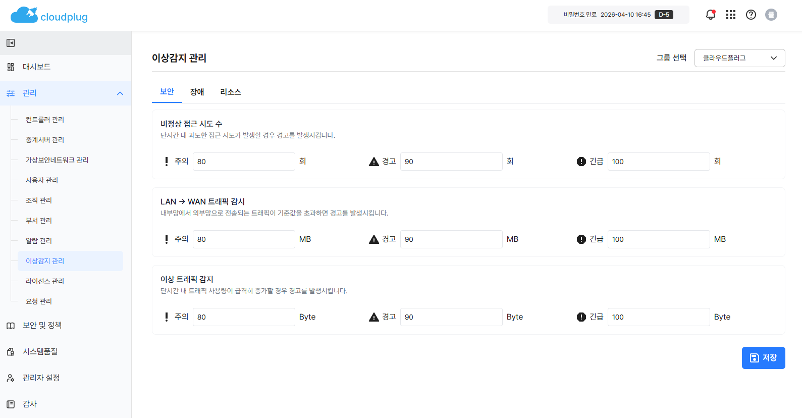 [보안 이상감지 화면] |
▶기능 설명:
시스템 장애 징후를 감지하기 위한 임계값을 설정한다.
▶사용 절차:
1. 좌측 메뉴에서 관리 > 이상감지 관리 > 장애로 이동한다.
2. 각 감지 항목의 임계값을 입력하거나 슬라이더(드래그)를 통해 설정한다.
3. 저장 버튼을 클릭하여 설정을 반영한다.
4. 설정 이후 알람 발생 여부를 확인하여 기준값의 적절성을 점검한다.
▶주요 설정 항목:
서비스 오류율: 전체 요청 수 대비 발생하는 에러 비율(%)을 설정한다.
응답 지연 시간: 시스템 응답이 평소보다 늦어질 경우의 대기 시간(ms) 기준을 설정한다.
연결 상태: 컨트롤러 및 주요 장비와의 통신 단절 감지 기준을 설정한다.
▶처리 결과 / 유의사항:
설정한 임계값을 초과할 경우, 설정된 단계(주의/경고/긴급)에 따라 알람이 자동 생성된다.
조직 컨텍스트에 따라 설정이 적용되므로, 작업 전 대상 조직을 반드시 확인해야 한다.
서비스 오류율 기준이 낮을 경우 일시적인 오류에도 빈번한 알람이 발생할 수 있다.
응답 지연 시간 기준은 시스템 평균 응답 시간 대비 적절한 수준으로 설정해야 한다.
연결 상태 감지는 네트워크 환경에 영향을 받을 수 있으므로, 일시적인 단절과 실제 장애를 구분할 수 있도록 기준을 설정해야 한다.
설정 변경 후에는 알람 발생 패턴을 지속적으로 모니터링하여 기준값을 보정하는 것이 권장된다.
▶스크린샷:
|
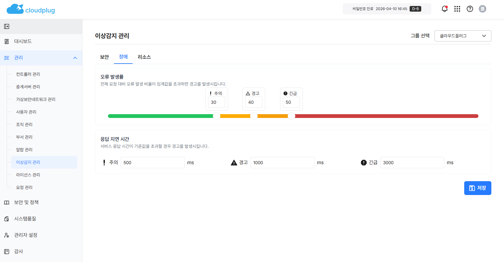 [장애 이상감지 화면] |
▶기능 설명:
시스템 자원 사용량에 대한 임계값을 설정하여 과부하 및 자원 부족 상태를 사전에 감지한다.
▶사용 절차:
1. 좌측 메뉴에서 관리 > 이상감지 관리 > 리소스로 이동한다.
2. 각 감지 항목의 임계값을 입력하거나 슬라이더(드래그)를 통해 설정한다.
3. 저장 버튼을 클릭하여 설정을 반영한다.
4. 설정 이후 알람 발생 여부를 확인하여 기준값의 적절성을 점검한다.
▶주요 설정 항목:
CPU 사용률: 프로세서 처리 용량의 단계별 임계값(%)을 지정한다.
메모리 사용률: 가용 메모리 부족 상황을 대비한 임계값(%)을 지정한다.
디스크/IP 자원: 저장 공간 및 가용 가상 IP 주소의 잔여량 부족 상태를 감지한다.
▶처리 결과 / 유의사항:
설정한 임계값을 초과할 경우, 설정된 단계(주의/경고/긴급)에 따라 알람이 자동 생성된다.
조직 컨텍스트에 따라 설정이 적용되므로, 작업 전 대상 조직을 반드시 확인해야 한다.
CPU 및 메모리 기준이 너무 낮을 경우 정상적인 부하 상황에서도 알람이 빈번하게 발생할 수 있다.
디스크 및 IP 자원은 부족 상태가 발생하면 서비스 중단으로 이어질 수 있으므로, 여유 용량을 고려하여 기준을 설정해야 한다.
리소스 사용량은 시간대 및 운영 패턴에 따라 변동되므로, 일정 기간 모니터링 후 기준값을 조정하는 것이 권장된다.
▶스크린샷:
|
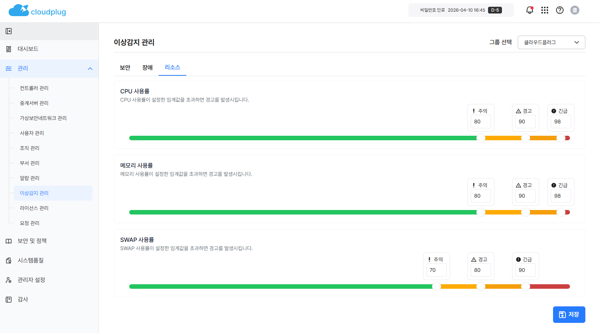 [리소스 이상감지 화면] |
▶메뉴 위치: 좌측 메뉴 > 관리 > 라이선스 관리
▶기능 설명:
라이선스 키, 상태, 활성일, 만료일, 잔여일을 확인한다.
사용자, 엔드포인트, VNET 사용량을 차트 형태로 확인하여 자원 사용 현황을 파악할 수 있다.
`.lic` 파일 업로드로 라이선스를 갱신한다.
▶사용 절차:
1. 라이선스 관리 메뉴로 이동한다.
2. 현재 라이선스 정보 및 사용량 현황을 확인한다.
3. 라이선스 업데이트 버튼을 클릭한다.
4. .lic 파일을 선택하여 업로드한다.
5. 결과 메시지를 통해 정상 적용 여부를 확인한다.
▶화면 내 주요 버튼:
| 버튼명 | 설명 |
|---|---|
| 라이선스 업데이트 | 라이선스 파일(.lic)을 업로드하여 갱신한다. |
▶주요 확인 항목:
| 주요 확인 항목 | 설명 |
|---|---|
| 라이선스 키 | 현재 적용된 라이선스 식별 값 |
| 상태 | 라이선스 활성/만료 상태 |
| 활성일 | 라이선스 적용 시작 일자 |
| 만료일 | 라이선스 만료 일자 |
| 잔여일 | 만료일까지 남은 기간 |
| 사용량 차트 | 사용자, 엔드포인트, VNET 사용 현황 |
▶처리 결과 / 유의사항:
.lic 확장자 파일만 업로드할 수 있으며, 형식이 올바르지 않은 경우 적용되지 않는다.
라이선스 관리 기능은 최고 관리자 권한에서만 사용할 수 있다.
라이선스 갱신 후 상태 및 만료일이 정상적으로 반영되었는지 반드시 확인해야 한다.
사용량이 최대 허용치에 근접한 경우, 사용자/엔드포인트/VNET 생성이 제한될 수 있다.
만료된 라이선스는 시스템 기능 제한 또는 서비스 영향이 발생할 수 있으므로 사전에 갱신해야 한다.
▶스크린샷:
|
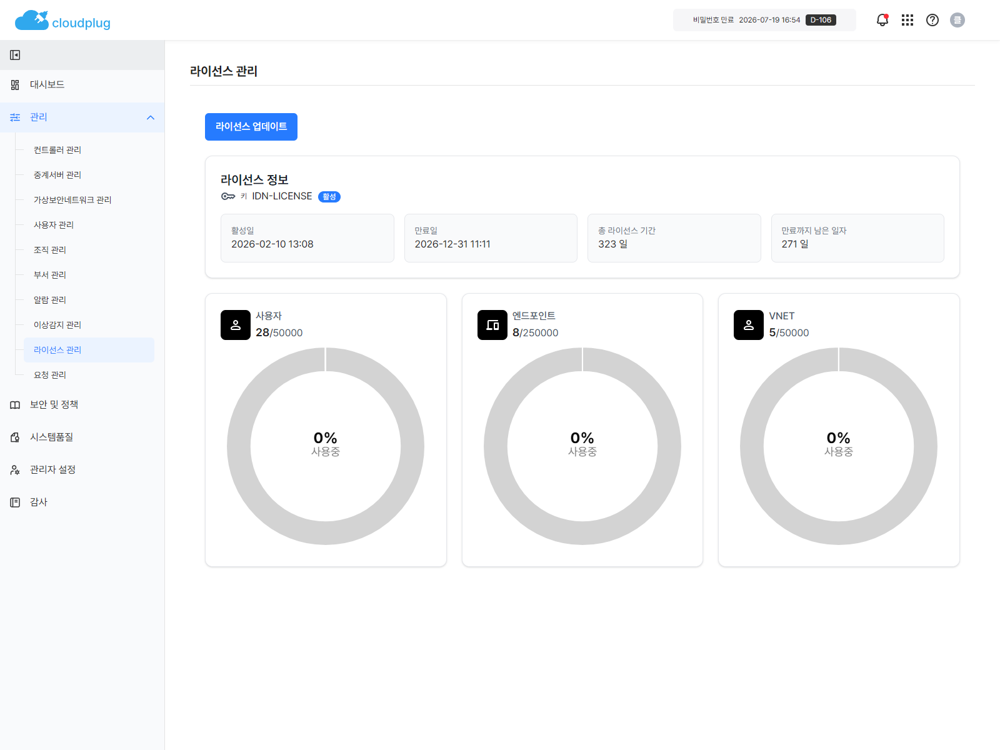 [라이선스 관리 화면] |
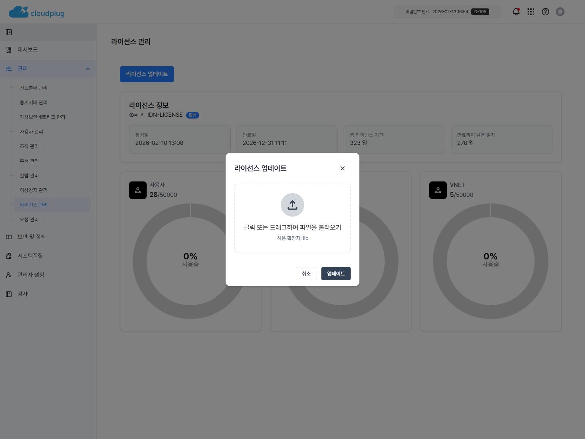 [라이선스 업데이트 팝업] |
▶메뉴 위치: 좌측 메뉴 > 관리 > 요청 관리
▶기능 설명:
일반 사용자가 신청한 VNET 및 엔드포인트 관련 변경 요청을 조회하고, 승인 또는 거절을 수행한다.
요청 대상에는 생성, 수정, 삭제, 사용자 할당/해제 등 모든 자원 변경 행위가 포함되며, 승인 완료 후에만 실제 시스템에 반영된다.
▶결재 프로세스 및 연동:
시스템 보안 정책에 따라 최고 관리자 및 조직 관리자를 제외한 사용자의 모든 자원 변경 행위는 결재 승인 후 반영된다.
주요 대상 행위
VNET: 생성, 수정, 삭제
엔드포인트: 생성, 수정, 삭제, 사용자 할당 및 해제
알람 연동
요청이 생성되면 상급자에게 즉시 알람이 전송된다.
알람은 알람 관리 또는 요청 관리 메뉴에서 확인할 수 있다.
▶요청 관리 목적:
무분별한 가상 네트워크 생성이나 인가되지 않은 단말 등록을 사전에 차단한다.
자원 사용의 적정성을 검토하여 불필요한 자원 낭비를 방지한다.
요청자, 승인자, 처리 이력 등을 기록하여 운영의 투명성과 추적성을 확보한다.
▶기능 설명:
접수된 요청 목록을 조회하여 요청 유형, 대상 자원, 요청자, 결재 상태 및 처리 결과를 확인한다.
▶사용 절차:
1. 좌측 메뉴에서 요청 관리 화면으로 이동한다.
2. 요청 목록을 조회한다.
3. 각 요청 항목의 상세 정보를 확인한다.
▶주요 항목:
| 항목 | 설명 | 표시 정보 |
|---|---|---|
| 요청 타입 | 요청된 작업 유형 | CREATE, UPDATE, DELETE, ASSIGN 등 |
| 리소스 타입 | 결재 대상 자원의 종류 | VNET 또는 ENDPOINT 구분 표시 |
| 타겟 | 요청이 적용될 대상 | 변경 대상 VNET 이름 또는 단말 식별 정보 표시 |
| 요청자 | 신청을 수행한 사용자 | 해당 요청을 최초로 작성한 사용자 아이디 표시 |
| 요청일 | 신청이 접수된 일시 | `YYYY-MM-DD HH:mm` 형식 |
| 결재 단계 | 현재 승인 프로세스 진행 상황 | 대기 상급자 또는 이전 승인 이력 표시 |
| 결과 | 최종 처리 상태 | 대기, 승인, 거절 등 현재 안건의 상태 표시 |
▶처리 결과 / 유의사항:
요청은 승인 완료 이후에만 실제 시스템에 반영된다.
결재 단계 정보를 통해 현재 승인 진행 상황을 확인할 수 있다.
대기 상태 요청은 우선적으로 검토하여 지연되지 않도록 관리해야 한다.
요청 거절 시 사유를 명확히 기록하여 사용자와의 혼선을 방지해야 한다.
요청 처리 결과는 운영 및 감사 이력으로 활용되므로, 정확하게 관리해야 한다.
▶스크린샷:
|
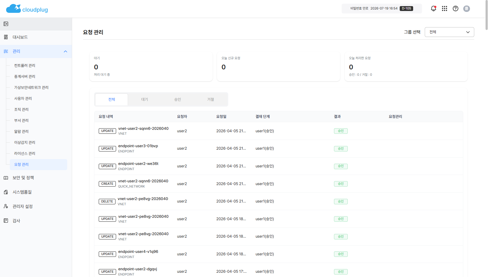 [요청 목록 화면] |
▶기능 설명:
요청 관리 목록에서 접수된 요청을 승인하여 해당 변경 사항을 시스템에 반영한다.
최고 관리자의 승인은 추가 결재 없이 즉시 최종 승인으로 처리된다.
▶사용 절차:
1. 좌측 메뉴에서 관리 > 요청 관리로 이동한다.
2. 승인할 요청 항목을 확인한다.
3. 목록 우측의 승인 버튼을 클릭한다.
4. 승인 결과가 정상적으로 반영되었는지 확인한다.
▶처리 결과 / 유의사항:
최고 관리자의 승인은 최종 승인으로 처리되며, 추가 결재 단계 없이 즉시 반영된다.
승인 완료 시 요청된 작업(생성, 수정, 삭제 등)이 실제 시스템 자원에 적용된다.
승인 전 요청 내용(대상 자원, 변경 내용)을 반드시 확인해야 한다.
승인된 작업은 즉시 반영되므로, 운영 중인 자원에 영향을 줄 수 있다.
승인 이력은 감사 및 추적을 위해 기록되며, 이후 변경 이력 확인에 활용된다.
▶스크린샷:
|
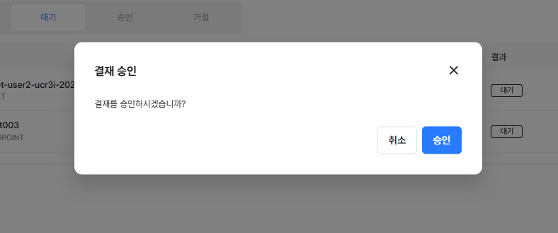 [요청 승인 화면] |
▶기능 설명:
요청 관리 목록에서 접수된 요청을 반려하여 해당 변경 사항의 반영을 취소한다.
최고 관리자의 반려는 추가 결재 없이 즉시 최종 결정으로 처리된다.
▶사용 절차:
1. 좌측 메뉴에서 관리 > 요청 관리로 이동한다.
2. 반려할 요청 항목을 확인한다.
3. 목록 우측의 반려 버튼을 클릭한다.
4. 필요 시 반려 사유를 확인 또는 입력한다.
5. 처리 결과가 정상적으로 반영되었는지 확인한다.
▶처리 결과 / 유의사항:
최고 관리자의 반려는 최종 결정으로 처리되며, 추가 결재 단계 없이 즉시 반영된다.
요청 반려 시 해당 변경 사항은 시스템에 적용되지 않으며, 기존 운영 중인 자원에는 영향을 주지 않는다..
반려된 요청은 재사용되지 않으며, 필요 시 새로운 요청으로 다시 진행해야 한다.
반려 사유를 명확하게 기록하여 요청자와의 혼선을 방지하는 것이 권장된다.
반려 이력은 감사 및 추적을 위해 기록되며, 이후 운영 이력 확인에 활용된다.
▶스크린샷:
|
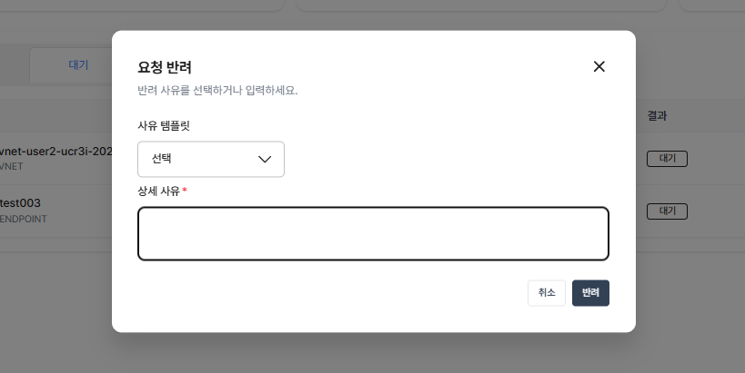 [요청 반려 화면] |
▶기능 설명:
시스템의 보안과 자원 운영 통제를 위해, 최고 관리자 및 조직 관리자를 제외한 일반 사용자의 자원 변경 행위는 반드시 결재권자의 승인을 거쳐야 한다.
승인 완료된 요청만 실제 시스템에 반영되며, 모든 결재 과정은 이력으로 기록된다.
▶대상 행위:
VNET: 생성, 수정, 삭제
엔드포인트: 생성, 수정, 삭제, 사용자 할당 및 해제
▶알람 연동:
사용자가 요청을 완료하면 결재권자에게 즉시 알람이 전송된다.
알람은 알람 관리 또는 요청 관리 메뉴에서 확인할 수 있다.
▶결재권자 권한 설정:
| 구분 | 설정 옵션 | 역할 및 권한 |
|---|---|---|
| 중간 결재자 | 결재권자 체크 | 하위 사용자의 요청을 검토하여 승인 또는 거절 가능 |
| 최종 승인자 | 부서 관리자 체크 | 부서 내 최종 승인 권한을 가지며, 승인 시 요청이 최종 확정됨 |
▶결재 요청 경로:
일반 사용자의 요청은 조직도 및 직위 체계를 기반으로 상향식으로 전달된다.
기본 원칙
동일 부서 내에서 본인보다 직위가 높고 결재권자 권한이 있는 상급자에게 우선 전달된다.
단계별 승인
1차 승인 후, 요청은 다음 상위 결재권자에게 순차적으로 전달된다.
단계별 승인
1차 승인 후, 요청은 다음 상위 결재권자에게 순차적으로 전달된다.
최종 승인 단계
부서 관리자 승인 시 요청이 최종 확정된다.
부서 간 확장
부서 관리자 부재 시 상위 부서의 결재권자에게 자동 이관된다.
▶관리자 그룹 권한:
최고 관리자: 모든 조직의 결재 건에 대해 즉시 최종 승인 또는 거절 가능
조직 관리자: 소속 조직 내 모든 결재 건을 결재 경로와 관계없이 즉시 최종 승인 가능
▶처리 결과 / 유의사항:
승인되지 않은 요청은 시스템에 반영되지 않는다.
결재 경로는 조직 및 직위 구조에 따라 자동으로 결정되므로, 부서 및 직위 설정이 정확해야 한다.
결재 지연 시 요청 반영이 늦어질 수 있으므로, 결재 상태를 지속적으로 확인해야 한다.
모든 결재 이력(요청자, 승인자, 처리 시간)은 기록되며, 감사 및 운영 추적에 활용된다.
▶기능 설명:
일반 사용자가 VNET을 생성하거나 자원 변경을 요청하면 즉시 반영되지 않고, 임시 상태로 저장된 후 결재 경로를 따라 승인 절차를 진행한다.
결재가 완료되기 전까지 해당 자원은 비활성 상태로 유지되며, 승인 이후에만 실제 시스템에 적용된다.
▶결재 흐름 개요:
요청 생성 시 자원은 임시 상태로 저장된다.
결재권자가 없는 경우 부서 관리자에게 자동 이관된다.
결재 진행 중인 자원은 수정이 제한된다.
▶실무 결재 경로 시나리오:
요청자: `test03`
1차 검토자: `test02` (동일 부서 상급자+결재권자)
최종 승인자: `test01` (상위 부서 상급자+결재권자+부서 관리자)
| 단계 | 처리 주체 | 상태 | 시스템 동작 |
|---|---|---|---|
| 요청 등록 | `test03` | 결재 대기 | VNET 정보를 비활성 상태로 임시 저장한다. |
| 1차 승인 | `test02` | 진행 중 | 상위 결재권자 `test01`에게 결재를 이관하고 알람을 전송한다. |
| 최종 승인 | `test01` | 승인 완료 | VNET을 활성화하고 컨트롤러 설정값을 전송한다. |
| 반려 | 관리자 공통 | 반려 | VNET 임시 데이터를 파기하고 요청자에게 알람을 전송한다. |
▶단계별 동작:
1. 요청 등록
라이선스 수량, VNET ID 중복 여부, 암호화 설정, 네트워크 주소(CIDR) 유효성 검증 수행
검증 통과 시 임시 상태로 저장
2단계 결재자 지정
조직도 및 직위 체계를 기반으로 직속 결재권자를 자동 탐색
결재 요청 알람 전송
3단계 상위 이관
중간 결재자가 승인하였으나 최종 권한이 없는 경우
상위 부서 결재권자에게 자동 이관
4단계 최종 승인
부서 관리자 권한을 가진 결재자가 승인 시
자원이 활성화되고 실제 시스템에 반영
▶처리 결과 / 유의사항:
조직 컨텍스트에 따라 조회 가능한 요청 범위가 결정된다.
최고 관리자 및 조직 관리자는 일반 결재 경로와 관계없이 모든 요청에 대해 즉시 최종 승인 또는 거절할 수 있다.
결재 진행 중인 요청은 수정이 제한되므로, 요청 등록 시 내용을 정확하게 입력해야 한다.
요청 처리 결과는 요청자, 승인자, 처리 일시와 함께 기록되며 감사 및 추적에 활용된다.
반려된 요청은 데이터가 삭제되므로, 필요 시 새로운 요청으로 다시 진행해야 한다.
▶스크린샷:
|
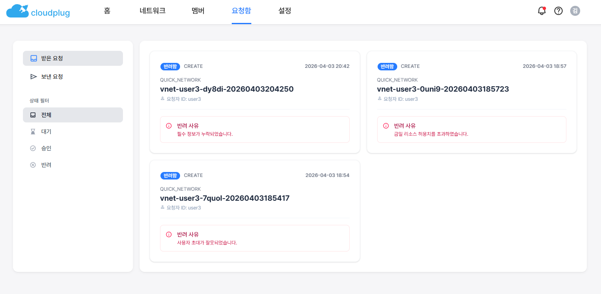 [결재권자 요청 관리 화면] |
▶메뉴 구성: 계정 보안, 비밀번호 보안, IP 접근 제어, 시험 파일
▶메뉴 위치: 좌측 메뉴 > 보안 및 정책 > 계정 보안
▶기능 설명:
로그인 시도 횟수 제한, 계정 잠금 시간, 자동 로그아웃 시간 설정 값을 관리한다.
▶사용 절차:
1. 계정 보안 메뉴로 이동한다.
2. 각 설정 값을 입력한다.
3. 저장 버튼을 클릭한다.
4. 저장 후 반영된 값을 확인한다.
▶입력 항목:
| 항목 | 설명 | 입력 가이드 |
|---|---|---|
| 로그인 시도 제한 | 허용 실패 횟수 | 1~999 |
| 계정 잠금 시간 | 잠금 유지 시간 | 1~999 |
| 오케스트레이터 타임아웃 | 타임아웃 값 | 1~999 |
▶화면 내 주요 버튼:
| 버튼명 | 설명 |
|---|---|
| 설정 저장 | 변경된 정책 값을 저장한다. |
▶처리 결과 / 유의사항:
저장 전 변경 여부에 따라 버튼 활성화 상태가 바뀐다.
공용 환경에서는 자동 로그아웃 시간을 짧게 두는 것이 안전하다.
▶스크린샷:
|
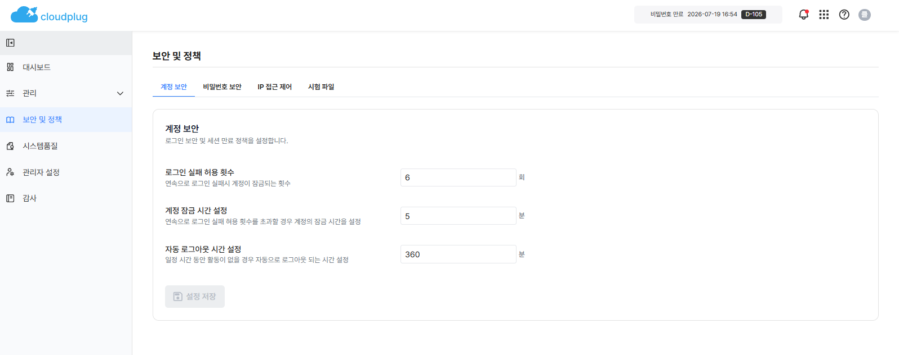 [계정 보안 화면] |
▶메뉴 위치: 좌측 메뉴 > 보안 및 정책 > 비밀번호 보안
▶기능 설명:
비밀번호 만료일, 금지 단어 목록, 초기 비밀번호 정책을 설정한다.
▶사용 절차:
1. 비밀번호 보안 메뉴로 이동한다.
2. 만료일과 초기 비밀번호 정책을 설정한다.
3. 금지 단어를 입력 후 Enter로 추가한다.
4. 저장 버튼을 클릭한다.
5. 반영 결과를 확인한다.
▶입력 항목:
| 항목 | 설명 | 입력 가이드 |
|---|---|---|
| 비밀번호 만료일 | 비밀번호 유효기간으로 기간 만료 시 사용자에게 안내한다. | 목록에서 선택 |
| 비밀번호 금지 단어 목록 | 비밀번호로 사용할 수 없는 단어를 설정한다. | Enter로 추가 |
| 사용자 초기 비밀번호 | 사용자 계정 생성 시 발급되는 초기 비밀번호를 설정한다. | 관리자 지정 방식 확인 |
▶화면 내 주요 버튼:
| 버튼명 | 설명 |
|---|---|
| 설정 저장 | 현재 비밀번호 정책을 저장한다. |
▶처리 결과 / 유의사항:
금지 단어 목록은 쉼표 문자열 형태로 저장된다.
금지 단어에는 회사명, 서비스명, 연도처럼 예측 가능한 문자열을 포함해 관리하는 것이 좋다.
▶스크린샷:
|
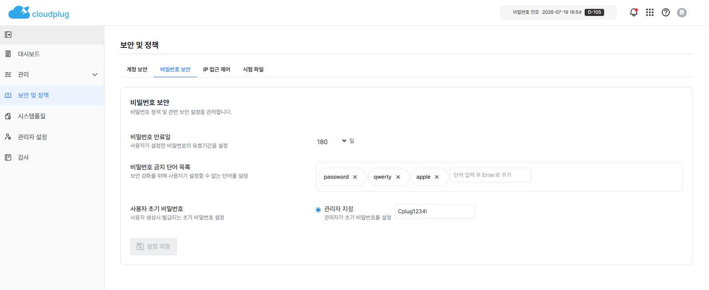 [비밀번호 보안 화면] |
▶메뉴 위치: 좌측 메뉴 > 보안 및 정책 > IP 접근 제어
▶기능 설명:
차단된 IP 목록을 조회하고 신규 등록, 수정, 해제를 수행한다.
▶사용 절차:
1. IP 접근 제어 메뉴로 이동한다.
2. 차단 목록을 확인한다.
3. `IP 차단 등록` 버튼으로 신규 항목을 추가한다.
4. 필요 시 수정 또는 해제를 수행한다.
5. 결과를 확인한다.
▶화면 내 주요 버튼:
| 버튼명 | 설명 |
|---|---|
| IP 차단 등록 | 차단 IP를 추가한다. |
| 수정 | 차단 사유 등 정보를 수정한다. |
| 해제 | 차단 IP를 목록에서 제거한다. |
▶처리 결과 / 유의사항:
차단 목록은 IP, 차단 일시, 사유를 기준으로 표시된다.
반복 로그인 실패나 외부 스캔이 발생한 경우 차단 사유를 구체적으로 남겨 감사 대응에 활용한다.
▶스크린샷:
|
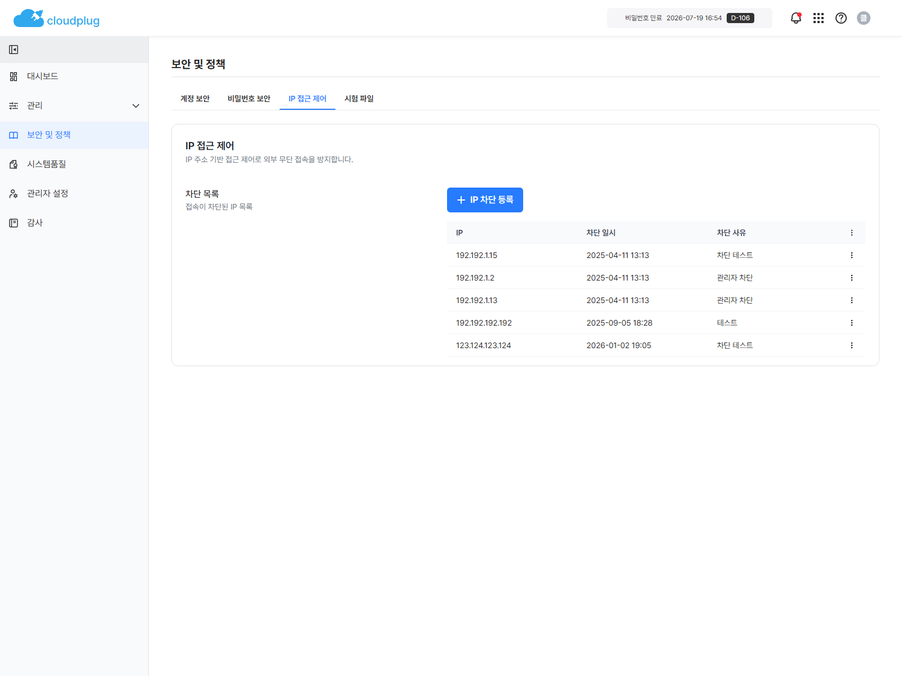 [IP 접근 제어 화면] |
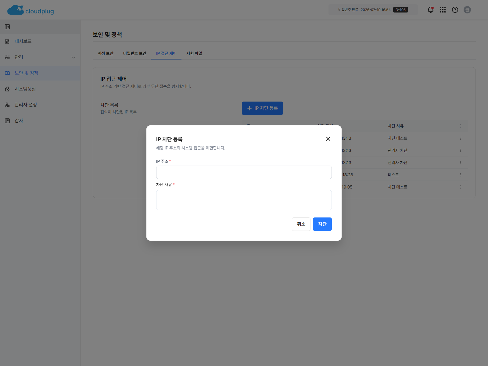 [IP 차단 등록 팝업] |
IDN 서비스에서 수행되는 시스템 시험 결과를 확인할 수 있는 기능이다.
관리자는 시스템 품질을 통해 시험 대상별 시험 결과를 확인하고 시스템 구성 요소의 정상 동작 여부 및 무결성 상태를 점검할 수 있다.
▶메뉴 위치: 좌측 메뉴 > 시스템품질
▶기능 설명:
시스템 시험 이력 조회, 수동 시험 시작, 예약 시험 설정을 수행한다.
시험 상세, 시험 그룹 상세, 무결성 결과를 확인할 수 있다.
▶사용 절차:
1. 시스템품질 메뉴로 이동한다.
2. 기간과 필터 조건으로 시험 이력을 조회한다.
3. `시험 시작` 버튼으로 수동 시험을 시작한다.
4. 필요 시 `예약 설정` 버튼으로 스케줄을 설정한다.
5. 목록에서 시험 결과를 확인한다.
▶화면 내 주요 버튼:
| 버튼명 | 설명 |
|---|---|
| 시험 시작 | 선택 대상 기준 수동 시험을 실행한다. |
| 예약 설정 | 예약 시험 조건을 설정한다. |
▶주요 항목:
| 항목 | 설명 | 표시 정보 |
|---|---|---|
| 시험 유형 | 시험의 유형 표시 |
- 시작시 시험: 시스템을 시작할 때 자동으로 수행되는 시험 - 관리자 시험: 관리자가 필요에 따라 직접 수행하는 시험 - 정기 시험: 미리 지정된 시험 일정에 따라 수행되는 시험 |
| 시험 일시 | 시험이 수행된 날짜 및 시간 | |
| 시험 결과 | 시험 성공 또는 실패 여부 | 성공, 실패 |
| 시험 대상 | 시험이 수행된 시스템 구성 요소 | 데이터베이스, 컨트롤러, DTR, HOST |
▶처리 결과 / 유의사항:
컨트롤러 시험 선택 시 시험 파일 선택 단계가 추가된다.
SSE 이벤트 수신 시 시험 결과 목록이 갱신된다.
세부 예약 입력 항목은 추가 확인이 필요하다.
변경 작업 직후에는 수동 시험으로 먼저 확인하고 정기 시험은 저부하 시간대로 예약하는 것이 좋다.
▶스크린샷:
|
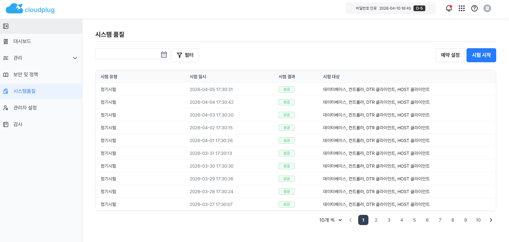 [시스템품질 화면] |
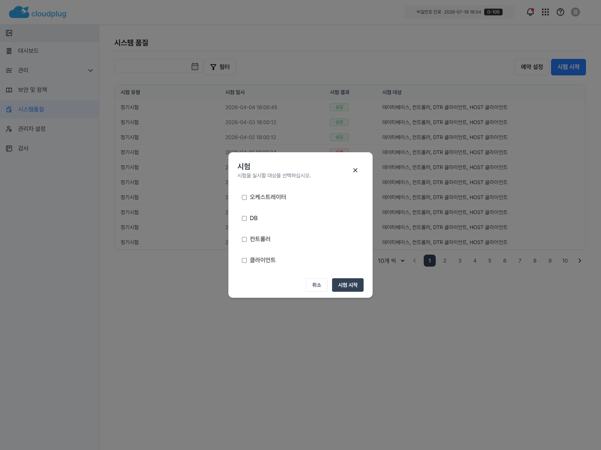 [시험 시작 팝업] |
[예약 설정 팝업] |
▶기능 설명:
선택한 시험에 대한 시험 대상별 결과 정보를 확인한다.
▶사용 절차:
1. 시스템품질 목록에서 상세 정보를 조회할 시험을 클릭한다.
2. 시험 상세 정보 화면에서 상세 결과를 확인할 대상을 클릭한다.
▶시험 대상:
데이터베이스
컨트롤러
DTR 클라이언트
HOST 클라이언트
▶시험 결과:
| 결과 | 설명 |
|---|---|
| 시험 중 | 시험이 진행 중인 상태 |
| 시험 성공 | 시험 대상이 정상 상태로 확인된 경우 |
| 시험 실패 | 시험 대상의 일부 항목에서 이상이 감지된 경우 |
| 시험 부분 실패 | 시험 대상의 일부 항목에서 이상이 감지된 경우 |
▶처리 결과 / 유의사항:
상세 결과는 선택한 시험 건 기준으로 표시되며 대상별 상태를 구분해 확인할 수 있다.
시험 실패 또는 시험 부분 실패가 발생한 경우 해당 대상의 세부 항목을 우선 확인한다.
▶스크린샷:
|
[시험 상세 정보 화면] |
▶메뉴 위치: 좌측 메뉴 > 관리자 설정
▶기능 설명:
관리자 기본 정보 수정, 비밀번호 변경, 전체 동기화를 수행한다.
▶사용 절차:
1. 관리자 설정 메뉴로 이동한다.
2. 이름, 이메일, 휴대폰 번호를 수정한다.
3. 저장 버튼을 클릭해 반영한다.
4. 필요 시 비밀번호 변경 버튼을 클릭한다.
5. 전체 동기화 버튼으로 시스템 동기화를 수행한다.
▶입력 항목:
| 항목 | 설명 | 입력 가이드 |
|---|---|---|
| 관리자 이름 | 표시 이름 | 필수 입력 |
| 이메일 주소 | 이메일 | 형식 확인 필요 |
| 휴대폰 번호 | 연락처 | 필수 입력 |
▶화면 내 주요 버튼:
| 버튼명 | 설명 |
|---|---|
| 전체 동기화 | 전체 또는 선택 그룹 기준 동기화를 수행한다. |
| 비밀번호 변경 | 관리자 비밀번호를 변경한다. |
| 설정 저장 | 관리자 기본 정보를 저장한다. |
▶처리 결과 / 유의사항:
정보 저장 전 비밀번호 확인 모달이 호출된다.
비밀번호 변경 성공 시 재로그인이 필요하다.
관리자 장치 등록 기능으로 접근 허용 단말을 관리할 수 있으며 실제 사용하는 단말 위주로 등록하는 것이 좋다.
대량 변경 후 상태 반영이 늦으면 전체 동기화를 검토한다.
▶스크린샷:

[관리자 설정 화면] |
 [비밀번호 변경 팝업] |
[관리자 장치 등록 팝업] |
▶메뉴 위치: 좌측 메뉴 > 감사
▶기능 설명:
감사 로그 목록을 조회하고 조건별 검색 및 백업을 수행한다.
▶사용 절차:
1. 감사 메뉴로 이동한다.
2. 필터와 조회 조건을 설정한다.
3. 목록을 확인한다.
4. 필요 시 백업 버튼으로 파일을 내려받는다.
▶화면 내 주요 버튼:
| 버튼명 | 설명 |
|---|---|
| 백업 | 감사 로그를 다운로드한다. |
▶처리 결과 / 유의사항:
그룹 컨텍스트 적용 시 선택 그룹 기준으로 조회된다.
승인, 반려, 삭제, 정책 변경 같은 중요한 작업은 감사 로그로 이중 확인하는 것이 좋다.
▶스크린샷:

[감사 화면] |
[감사 백업 팝업] |